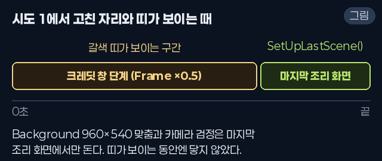
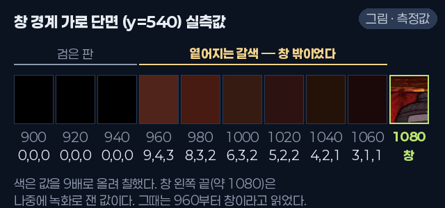
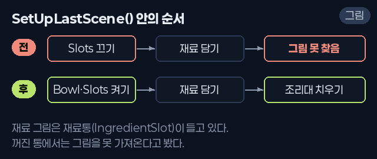
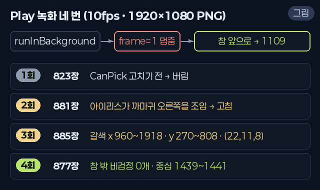
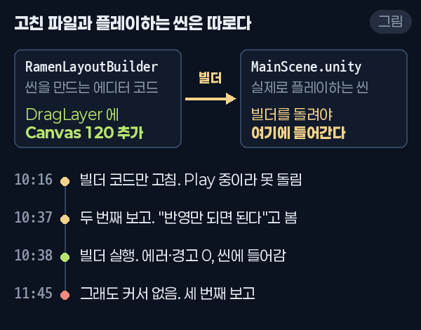
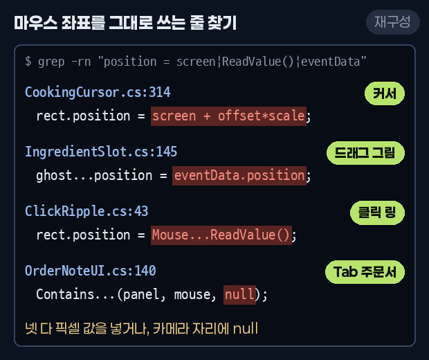
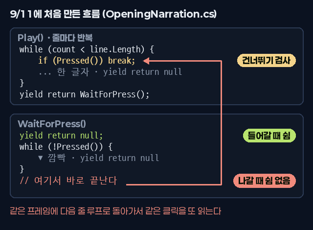
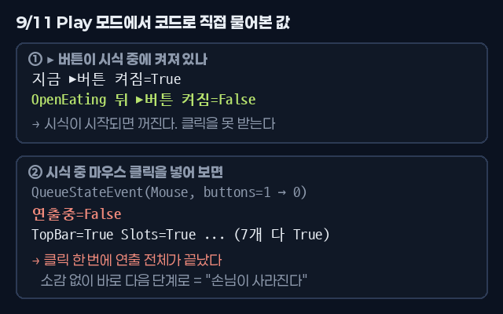
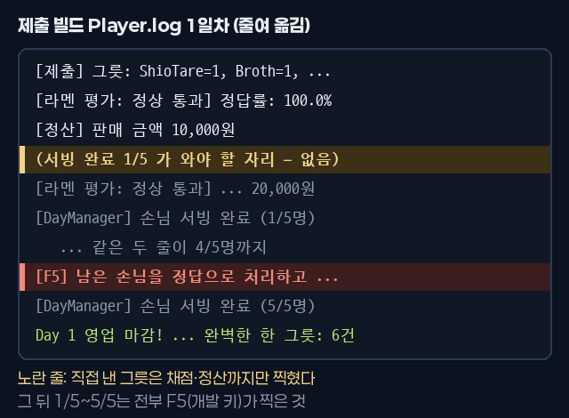

<title>나의 인생 라멘가게</title>
<meta name="claude:viewport-fit-sides" content="cover">
<link rel="preconnect" href="https://fonts.googleapis.com">
<link rel="stylesheet" href="https://fonts.googleapis.com/css2?family=JetBrains+Mono:wght@400;500&display=swap">
<link rel="stylesheet" href="assets/site.css">
<canvas id="sky" aria-hidden="true"></canvas>
<nav class="nav" aria-label="섹션">
  <div class="wrap">
    <a class="back" href="index.html">← 김기백</a>
    <ul>
      <li><a href="#ramen">개요</a></li>
      <li><a href="#systems">시스템</a></li>
      <li><a href="#problems">문제 해결</a></li>
      <li><a href="#collab">협업</a></li>
    </ul>
  </div>
</nav>
<main>
<!-- 개요 -->
<section class="page" id="ramen">
  <div class="wrap">
    <div class="proj-head">
      <div class="stack-col" style="gap:14px">
        <span class="eyebrow">STAR 01 · TEAM PROJECT · 2026.09.04 ~ 09.17</span>
        <h2>나의 인생 라멘가게</h2>
        <p class="lead">손님이 돌려 말하는 주문을 해석해서 라멘을 만드는 2D 조리 퍼즐 게임. "초록색은 빼 주세요"가 파를 빼라는 뜻이라는 걸 알아내야 한다. 5일 동안 가게를 열고, 하루 매출 목표를 넘기면 다음 날로 넘어간다.</p>
      </div>
      <div class="btn-row">
        <a class="btn" href="https://youtu.be/pF59wLZO8Vk" target="_blank" rel="noopener">시연 영상 ↗</a>
        <a class="btn" href="https://github.com/TwincleStakey/Team_ramen" target="_blank" rel="noopener">GitHub 코드 ↗</a>
      </div>
    </div>
    <div class="yt" data-id="pF59wLZO8Vk" data-title="나의 인생 라멘가게 시연 영상">
      
      <button type="button" class="yt-play" aria-label="시연 영상 재생"><span>▶</span>시연 영상 재생</button>
    </div>
    <div class="facts">
      <div class="fact me"><span class="eyebrow">MY PART</span><b>메인 개발 · 조리부터 연출까지</b><p>조리 판정, 그릇과 도구 커서, 시식·해금·엔딩 연출, UI 전체, 화면을 코드로 짓는 에디터 툴. 그리고 팀원이 만든 주문·채점 시스템을 하나의 게임 루프로 이었다.</p></div>
      <div class="fact team"><span class="eyebrow">TEAM PROJECT</span><b>4명 · 2주</b><p>코드는 둘이 폴더 단위로 나눴다. 주문·대사·채점·정산은 팀원(<span class="mono">Customer/</span>), 그 밖은 내가 맡았다.</p></div>
      <div class="fact"><span class="eyebrow">STACK</span><b>사용 기술</b><p class="mono" style="font-size:13.5px">Unity 6000.3 · C# · URP<br>Input System · uGUI · TMP<br>Editor 스크립트 · Git LFS · Python</p></div>
    </div>

    <h3 class="sub-h">한 손님을 받는 흐름 <span class="cap" style="font-weight:400">· 사진을 누르면 크게 볼 수 있다</span></h3>
    <div class="loop" aria-label="한 손님을 받는 흐름">
      <figure><figcaption><span class="n">1</span><span><b>주문 듣기</b><br>손님이 사투리와 돌려 말하기로 주문한다</span></figcaption></figure>
      <figure><figcaption><span class="n">2</span><span><b>주문 해석</b><br>Tab으로 주문서, B로 레시피북을 연다</span></figcaption></figure>
      <figure><figcaption><span class="n">3</span><span><b>조리</b><br>타래 → 육수 → 면 → 토핑 순서로 담는다</span></figcaption></figure>
      <figure><figcaption><span class="n">4</span><span><b>시식 반응</b><br>정확도 구간마다 다른 연출이 나온다</span></figcaption></figure>
      <figure><figcaption><span class="n">5</span><span><b>하루 정산</b><br>목표 매출을 넘겨야 다음 날로 간다</span></figcaption></figure>
    </div>
  </div>
</section>

<!-- 핵심 시스템 -->
<section class="page" id="systems">
  <div class="wrap">
    <div class="sec-head">
      <span class="eyebrow">CORE SYSTEMS</span>
      <h2 class="h-sec">내가 만든 핵심 시스템</h2>
      <p class="lead">조리는 내가, 주문 생성과 채점은 팀원이 만들었다. 두 쪽이 서로의 내부를 모르게 하고, 함수 하나에서만 만나게 했다.</p>
    </div>
    <div class="legend"><span class="me"><i></i>내가 만든 것</span><span class="team"><i></i>팀원이 만든 것</span><span class="shared"><i></i>교집합</span></div>
    <div class="flow" role="img" aria-label="내가 만든 Bowl과 GameManager가 교집합인 EvaluateRamen을 거쳐 팀원이 만든 RamenCalculator와 DayManager로 이어진다">
      <div class="node me"><b>Bowl</b><span>담긴 재료</span></div><div class="arr">→</div>
      <div class="node me"><b>GameManager</b><span>화면 흐름</span></div><div class="arr">→</div>
      <div class="node shared"><b>EvaluateRamen()</b><span>교집합</span></div><div class="arr">→</div>
      <div class="node team"><b>RamenCalculator</b><span>채점</span></div><div class="arr">→</div>
      <div class="node team"><b>DayManager</b><span>일차·정산</span></div>
    </div>
    <div class="sys-grid">
      <div class="sys">
        <span class="eyebrow" style="font-size:16px">COOKING RULES</span>
        <h3>조리 판정: 순서와 상한을 그릇이 직접 막는다</h3>
        <p>타래 → 육수 → 면 순서가 아니면 그릇이 붉게 깜빡이며 받지 않는다. 토핑은 종류마다 최대 4개까지만 들어간다. 담긴 순서마다 위치와 각도를 정해 둔 자리표가 있어서, 최대 수량을 담아도 재료가 그릇 밖으로 넘치지 않는다.</p>
        <p>상한 4는 주문을 만드는 쪽과 조리 쪽이 같이 써야 하는 값이라 상수 하나로 묶었다. 처음에는 두 파일에 따로 적혀 있어서, 토핑 5개짜리 주문이 나오면 무조건 오답이 되는 버그가 있었다.</p>
      </div>
      <div class="sys">
        <span class="eyebrow" style="font-size:16px">SCENE BUILDER</span>
        <h3>메뉴 한 번으로 화면 전체를 다시 짓는 툴</h3>
        <p>조리 화면 UI를 손으로 배치하지 않고, 에디터 스크립트 <span class="mono">RamenLayoutBuilder</span>가 코드로 만들고 저장한다. 손으로 배치하면 사람마다 결과가 달라서 재현이 안 되고, 씬 파일 충돌도 난다.</p>
        <p>좌표와 글자 크기를 상수 한 곳에 모아 둬서, 해상도를 640×360에서 960×540으로 넓힐 때도 상수만 바꾸고 빌더를 다시 돌렸다.</p>
      </div>
      <div class="sys">
        <span class="eyebrow" style="font-size:16px">DAY DIFFICULTY</span>
        <h3>랜덤인데 난이도가 쏠리지 않게</h3>
        <p>손님마다 난이도를 따로 뽑으면, 하루 5~8명이라는 작은 표본에서는 첫날부터 어려운 손님만 나올 수 있었다. 일차별 구성을 표로 정하고, 가방에 넣고 섞어서 한 명씩 꺼내는 셔플 백으로 바꿨다.</p>
        <pre class="code"><span class="kw">private static readonly int</span>[][] DayDifficulties =
{
    <span class="kw">new</span>[] { 1, 1, 1, 1, 1 },
    <span class="kw">new</span>[] { 1, 1, 1, 2, 2 },
    <span class="kw">new</span>[] { 1, 1, 2, 2, 2, 3 },
    <span class="kw">new</span>[] { 1, 2, 2, 2, 3, 3 },
    <span class="kw">new</span>[] { 1, 2, 2, 3, 3, 3, 3, 3 }
};</pre>
      </div>
      <div class="sys">
        <span class="eyebrow" style="font-size:16px">FEEDBACK · TEMPO</span>
        <h3>손님 반응과 연출 배속</h3>
        <p>정확도 숫자만 보여 주면 뭘 틀렸는지 모른다. 그래서 손님 반응을 점수 구간이 아니라 어긋난 방향(빠짐 · 넘침 · 뒤바뀜)으로 골라 대사로 돌려준다.</p>
        <p>연출은 <span class="mono">Time.timeScale</span>을 안 타는 실시간 기준이라 빨리 감기가 안 먹었다. 연출 전용 배율 <span class="mono">CookTempo</span>를 따로 두고 연출 코드가 모두 그 값을 곱하게 했다.</p>
        <figure class="media-card"></figure>
      </div>
    </div>

    <h3 class="sub-h">짧게 잡은 문제들</h3>
    <div class="tbl"><table>
      <thead><tr><th>증상</th><th>원인</th><th>해결</th></tr></thead>
      <tbody>
        <tr><td>에디터에서는 되는데 빌드만 실패</td><td><span class="mono">#if UNITY_EDITOR</span> 안에서 선언하고 밖에서 사용</td><td>선언을 가드 밖으로 옮기고 같은 유형 26곳을 전부 확인</td></tr>
        <tr><td>토핑 5개짜리 주문은 무조건 오답</td><td>재료 상한이 두 파일에 따로 적혀 있음</td><td>상수 하나로 통일</td></tr>
        <tr><td>저장소를 새로 받으면 주문이 안 생김</td><td>빌더가 씬을 고치기만 하고 저장하지 않음</td><td>빌더가 저장까지 하도록 수정</td></tr>
        <tr><td>머지는 됐는데 씬이 조용히 깨짐</td><td>씬 파일을 줄 단위로 머지해 참조 ID가 어긋남</td><td><span class="mono">.gitattributes</span>에 <span class="mono">-merge</span>를 걸어 명시적 충돌로 전환</td></tr>
        <tr><td>Play 직후 간판 점등 연출이 안 보임</td><td>첫 프레임 하나가 4.27초. <span class="mono">unscaledDeltaTime</span>은 유니티가 잘라 주지 않음</td><td>한 프레임에 흘려보낼 시간을 0.05초로 제한</td></tr>
      </tbody>
    </table></div>
  </div>
</section>

<!-- 문제 해결 -->
<section class="page" id="problems">
  <div class="wrap">
    <div class="sec-head">
      <span class="eyebrow">TROUBLESHOOTING</span>
      <h2 class="h-sec">가장 오래 붙잡은 버그 세 개</h2>
      <p class="lead">셋 다 한 번에 안 잡혔다. 자세히 보기를 누르면 증상, 헛짚었던 시도, 원인 그림, 바뀐 코드, 고치기 전과 후, 배운 것이 차례로 열린다. 사진은 누르면 커진다. <span class="cap">실제 화면은 "실제 화면", 내가 다시 그리거나 합성한 건 "재구성"·"그림"으로 표시했다.</span></p>
    </div>

    <!-- A -->
    <article class="prob" id="prob-a">
      <div class="prob-sum">
        <div class="txt">
          <span class="tag">A · 엔딩 연출 · 제출 전날</span>
          <h3>엔딩 크레딧이 끝까지 재생되지 않았다</h3>
          <div class="chips"><span class="chip">진행 순서의 주인</span><span class="chip">부모 좌표계</span><span class="chip">비활성 오브젝트</span><span class="chip">전역 상태</span><span class="chip">픽셀 측정</span></div>
          <dl class="star4">
            <dt>상황</dt><dd>크레딧을 끝까지 돌려 보니 네 가지가 동시에 어긋났다. 손님이 쓰러지기 전에 화면이 검어지고, 아이리스가 엉뚱한 곳을 조이고, 마지막 그릇이 비어 있고, 검은 화면 옆에 갈색 띠가 남았다.</dd>
            <dt>시도</dt><dd>여섯 번. 갈색 띠는 세 번 헛짚은 뒤에 잡혔다.</dd>
            <dt>원인</dt><dd>버그 하나가 아니라 넷이었다. 고정 타이머가 끝을 정했고, 좌표 변환이 두 번 걸렸고, 끝나지 않은 튜토리얼이 재료를 막았고, 갈색 띠는 같이 줄어든 비네트 그림이었다.</dd>
            <dt>결과</dt><dd class="res">아이리스 중심 오차 ±1px, 창 바깥 검정 아닌 픽셀 0개.</dd>
          </dl>
          <button class="btn more" type="button" aria-expanded="false" aria-controls="det-a">자세히 보기 ▾</button>
        </div>
        <figure><figcaption class="cap">실제 화면. 검은 화면에 갈색 띠가 남은 상태</figcaption></figure>
      </div>
      <div class="detail" id="det-a" hidden>
        <div class="tabs" role="tablist" aria-label="A 자세히"></div>

        <div class="panel" role="tabpanel" data-label="증상">
          <h4>01 증상</h4>
          <p class="lead" style="font-size:17px;margin-bottom:14px">엔딩 크레딧은 왼쪽에 제작진 이름이 흐르고, 오른쪽 작은 창에서 마지막 손님이 라멘을 네 그릇 먹다가 쓰러지는 장면이다. 까마귀가 내려앉으면 그 까마귀를 중심으로 화면이 동그랗게 오므라들고(아이리스), 마지막으로 조리 화면이 한 번 비친 뒤 끝나야 했다.</p>
          <p class="lead" style="font-size:16px;margin-bottom:14px">화면은 세로로 반을 갈랐다. 왼쪽 칸에는 이름 카드가 한 장씩 아래에서 떠올랐다가 위로 빠지고, 오른쪽 칸에는 게임 화면 전체를 담은 <span class="mono">Frame</span>을 0.5배로 줄여 (240, 0)에 앉힌 창이 있다. 창 안에서는 실제 게임이 돈다. 대식가 손님이 걸어 들어와 "여기 너무 맛있다. 곱빼기로 달라"고 하고, 그릇을 비울 때마다 "한 그릇 더!"를 외치다가 "후… 더 이상은 못 먹겠어" 하고 쓰러진다. 쓰러지는 연출은 눈을 감고 좌우로 2칸 휘청인 다음 카운터 뒤로 185칸 내려가는 것이다. 카운터가 앞 레이어라 몸은 가려지고 모자가 카운터 위에 남는데, 그 모자 꼭대기에 까마귀가 앉는다.</p>
          <p class="lead" style="font-size:16px;margin-bottom:18px">9월 16일, 제출 전날 저녁 5시 10분쯤부터 크레딧을 끝까지 돌려 보며 나온 게 아래 네 가지다. 확인할 때는 5일 차 정산을 거치지 않고 개발 키 F6으로 크레딧에 바로 들어갔다. 넷이 한 화면에 같이 보여서 한 문제처럼 느껴졌지만, 원인은 서로 아무 상관이 없었다. 다 잡기까지 50분쯤 걸렸다.</p>
          <div class="sym-grid">
            <figure class="media-card"><span class="src">재구성</span><figcaption><b><span class="num">①</span>손님이 쓰러지기도 전에 화면이 검어진다</b>이름 카드가 다 지나가는 40초쯤 검은 판이 차오른다. 손님은 아직 그릇을 비우는 중이라 쓰러지는 장면까지 가지도 못한다.</figcaption></figure>
            <figure class="media-card"><span class="src">재구성</span><figcaption><b><span class="num">②</span>아이리스가 까마귀가 아닌 빈 곳을 조인다</b>까마귀가 모자 위에 앉은 뒤 원이 줄어드는데, 중심이 까마귀 오른쪽 빈 곳이다. 까마귀는 검은 화면 속에 묻혀 버린다.</figcaption></figure>
            <figure class="media-card"><span class="src real">실제 화면</span><figcaption><b><span class="num">③</span>마지막 조리 화면의 라멘이 비어 있다</b>"오늘 밤도, 불을 밝힙니다." 뒤에 있어야 할 라멘이 없다. 처음엔 그릇 자체가 없었고, 그릇을 다시 켠 뒤에는 빈 그릇만 나왔다.</figcaption></figure>
            <figure class="media-card"><span class="src real">실제 화면</span><figcaption><b><span class="num">④</span>검은 화면 옆에 갈색 띠가 남는다</b>창 둘레로 갈색 네모가 비친다. 나중에 재 보니 RGB(22,11,8)로 거의 검정인데, 넓은 순수 검정 옆에 붙어 있어서 경계가 또렷이 보였다.</figcaption></figure>
          </div>
          <ul class="notes" style="margin-top:18px">
            <li><span class="ln">①</span><span>재현은 매번 됐다. 크레딧을 켜고 기다리기만 하면 된다. 손님이 먹는 시간은 그릇 수와 대사 길이에 따라 달라지는데, 화면이 검어지는 시각은 매번 같았다. 손님 쪽에 그릇이 놓이고 물러나는 페이드(0.7초·0.6초, 그릇 사이 0.5초)를 넣은 뒤로는 한 그릇에 1.8초쯤씩 늘어서 더 일찍 잘렸다.</span></li>
            <li><span class="ln">②</span><span>원은 매번 같은 자리, 까마귀의 오른쪽으로 닫혔다. 처음엔 눈으로 "조금 비껴간다" 정도로만 보였고, 얼마나 비껴가는지는 녹화를 하고 나서야 잴 수 있었다.</span></li>
            <li><span class="ln">③</span><span>손님 앞에 놓이는 그릇은 그림 한 장이라 멀쩡해 보였다. 재료를 실제로 붓는 그릇은 마지막 조리 화면의 그릇 하나뿐이라, 거기서만 드러났다.</span></li>
            <li><span class="ln">④</span><span>크레딧 내내 보였다. 첫 카드("네오위즈 K 게임 아카데미 8기", 2.5~6.7초)에서 이미 창 왼쪽에 세로 띠가 있었다. 같은 판에서 "쓰러질 때 머리끝까지 안 보인다", "까마귀가 공중에 떠 있다"도 같이 적어 뒀다.</span></li>
          </ul>
        </div>

        <div class="panel" role="tabpanel" data-label="시도 과정">
          <h4>02 시도 과정</h4>
          <ol class="tries">
            <li class="fail">
              <div class="try-h"><span class="try-n">1</span><b>배경이 화면보다 커서 비친다고 봤다</b><span class="tag-x">그대로</span></div>
              <div class="try-media"><figure class="media-card"><span class="src real">실제 화면 · 이때 본 화면</span></figure></div>
              <div class="row why"><span class="k">WHY</span><div class="v"><p>처음 돌려 본 판에서 찍은 화면 중 하나가 마지막 조리 화면이었는데, 나무 조리대가 화면 끝까지 깔려 있었다. 조리대 그림(<span class="mono">Background</span>)의 앵커가 (0,0)~(1,1), 크기 0으로 부모를 꽉 채우게 늘어나 있었다. 이러면 16:9가 아닌 창에서는 게임 판(960×540) 바깥까지 나무가 깔린다. 카메라 배경색도 유니티 기본값(0.192, 0.302, 0.475)인 채였다. 갈색은 이 둘 중 하나가 비친 거라고 봤다.</p></div></div>
              <div class="row did"><span class="k">DID</span><div class="v">
                <p>에디터에 코드를 직접 돌리는 도구로 <span class="mono">IrisFade</span>와 <span class="mono">Background</span>의 상태부터 찍었다. 아이리스는 가운데 구멍(<span class="mono">hole</span>) 하나와 4000×4000짜리 막대 네 개(위·아래·왼·오른)가 같은 <span class="mono">Panel</span> 밑에 있는 구조였고, 구멍을 줄이면 막대가 따라 들어오며 화면을 덮는다. 그다음 세 가지를 한 번에 고쳤다.</p>
                <ul>
                  <li><b>갈색:</b> 마지막 조리 화면을 차리는 <span class="mono">SetUpLastScene()</span>에서 <span class="mono">Background</span>의 앵커와 피벗을 가운데(0.5, 0.5)로 바꾸고 <span class="mono">sizeDelta</span>를 960×540으로 박았다. 판 바깥은 <span class="mono">Camera.main.backgroundColor = Color.black</span>으로 검게 했다.</li>
                  <li><b>①:</b> 끝맺음을 카드 시계에서 떼어 냈다. <span class="mono">Run()</span>의 반복 조건을 카드 시계 기준인 <span class="mono">IsDone(t)</span>에서 <span class="mono">!endingDone</span>으로 바꾸고, 무대 코루틴 <span class="mono">RunStage()</span> 맨 끝에 <span class="mono">PlayEnding()</span>을 붙였다. <span class="mono">PlayEnding()</span>은 검은 판을 1로 채우고 한 프레임 기다린 다음 새로 만든 <span class="mono">IrisFade.Hide()</span>로 아이리스 판을 치운다. 순서를 뒤집으면 한 프레임 동안 무대가 통째로 비치기 때문이다. 그 뒤 검은 채로 1.2초, 2.2초에 걸쳐 조리 화면을 드러내고 마지막 한 줄을 띄운다.</li>
                  <li><b>③:</b> 그릇이 통째로 꺼져 있었다. 주문 화면이 열릴 때 <span class="mono">OrderScreenUI.ShowCookingProps(false)</span>가 조리대 물건(그릇 포함)을 내려 두는데, 크레딧은 주문 화면을 닫지 않고 끄기만 해서 그릇을 다시 켜 주는 쪽이 없었다. <span class="mono">SetUpLastScene()</span>에서 <span class="mono">Bowl</span>을 <span class="mono">SetActive(true)</span> 했다.</li>
                </ul>
                <p>Console 에러 0개까지는 확인했다. 하지만 셋 다 Play에서 코루틴이 돌아야 보이는 부분이라 화면으로는 확인하지 못했다.</p>
                <figure class="did-media"><figcaption><span class="src">그림</span>배경 맞춤은 마지막 조리 화면에서만 돈다. 갈색 띠가 보이는 동안에는 닿지 않는 자리였다.</figcaption></figure>
              </div></div>
              <div class="row res"><span class="k">RESULT</span><div class="v"><p>다시 돌려 보니 "아직도 갈색화면이랑 검은화면 구분되잖아", 이어서 "쓰러지기도 전에 검은화면되는데"였다. 갈색은 고친 자리부터 틀렸다. 배경 맞춤은 <span class="mono">SetUpLastScene()</span> 안에 있어서, 띠가 보이는 창 단계에는 처음부터 손이 닿지 않았다. ①도 반만 고쳐져 있었다. 반복 조건은 바꿨지만 이름 카드를 그리는 <span class="mono">SeekTo()</span>가 여전히 카드 시계로 검은 판을 차오르게 하고, 창도 글자와 같이 흐리고 있었다. 그릇은 다시 나왔다.</p></div></div>
            </li>
            <li class="fail">
              <div class="try-h"><span class="try-n">2</span><b>검은 판이 화면 일부만 덮는다고 봤다</b><span class="tag-x">아님</span></div>
              
              <div class="row why"><span class="k">WHY</span><div class="v"><p>후보가 둘이었다. 하나는 전에 본 현상이다. 창 바깥을 덮는 검은 판(<span class="mono">CreditsBackdrop</span>)을 빨갛게 칠해 본 적이 있는데, 메시는 화면 전체를 덮는 것으로 나오는데도 왼쪽 420픽셀쯤까지만 그려졌다. 그때는 배경을 검정으로 바꾸면서 경계가 안 보이게 되어 원인을 못 찾고 넘어갔다. 그 안 덮인 자리로 나무가 비친다고 봤다. 다른 하나는, 크레딧이 켜지고 첫 손님의 주문 화면이 열리기 전까지 창 안이 아직 조리 화면(나무)이라는 것. 띠가 보인 화면이 첫 카드 구간(2.5~6.7초)이라 딱 그때였다.</p></div></div>
              <div class="row did"><span class="k">DID</span><div class="v">
                <p>둘은 고치는 방향이 반대라서, 이번엔 고치기 전에 쟀다. 크레딧 화면을 원하는 시각으로 찍어 주는 확인용 렌더(<span class="mono">CreditsPreview.CaptureRange</span>)를 만들어 둔 게 있었는데, 에디트 모드 전용이라 Play를 멈출 때까지 기다렸다. 그다음 5초 지점을 1920×1080 한 장으로 렌더하고 <span class="mono">Texture2D.GetPixel</span>로 가로 한 줄씩 읽었다.</p>
                <ul>
                  <li>y=900(위에서 180px) 줄: 96px 간격 20점이 전부 (0,0,0).</li>
                  <li>y=540(한가운데) 줄: 0~640 전부 0, 704는 글자 색(250,226,181), 960부터 값이 생긴다.</li>
                  <li>경계만 20px 간격으로 다시: 940까지 (0,0,0), 960 (9,4,3), 980 (8,3,2) … 1060 (3,1,1).</li>
                </ul>
                <p>검은 판은 멀쩡했다. 그래서 갈색은 창 안쪽이라고 결론 내렸다. 창에 붙어 있는 <span class="mono">CanvasGroup</span>(<span class="mono">stageAway</span>)의 <span class="mono">alpha</span>를 0으로 두고 시작해서, 손님을 세우고 한 프레임 기다린 뒤 <span class="mono">FadeStageIn()</span>으로 1.4초 동안 <span class="mono">SmoothStep</span>으로 열게 했다. 같은 때 ①을 마저 고쳤다. <span class="mono">SeekTo()</span>에서 검은 판과 창의 <span class="mono">alpha</span>를 건드리는 코드를 통째로 뺐다. 이제 카드 시계가 쥔 건 글자뿐이고, 화면을 검게 하는 곳은 <span class="mono">PlayEnding()</span> 하나다.</p>
                <figure class="did-media"><figcaption><span class="src">그림</span>이때 잰 값. 960~1060에서 옅어지던 갈색은 창 안이 아니라 창 밖이었다.</figcaption></figure>
              </div></div>
              <div class="row res"><span class="k">RESULT</span><div class="v"><p>①은 이걸로 끝났다. 이후로 쓰러지기 전에 검어지는 일은 없었다. 갈색 띠는 "그대로잖아". 지금 보면 답은 측정값에 이미 있었다. 960부터 9,4,3 → 3,1,1로 옅어지던 값은 창 안의 밤 배경이 아니었다. 나중에 녹화로 잰 창의 왼쪽 끝은 약 1080이라, 그 구간은 창 밖이었다. 숫자는 재 놓고 해석은 짐작으로 한 셈이다.</p></div></div>
            </li>
            <li class="fail">
              <div class="try-h"><span class="try-n">3</span><b>밤 배경 그림이 창보다 크다고 봤다</b><span class="tag-x">그대로</span></div>
              <div class="row why"><span class="k">WHY</span><div class="v"><p>창 안쪽이 문제라면, 창 안에 판보다 큰 무언가가 있어서 창이 줄 때 밖으로 삐져나와야 했다. 주문 화면의 밤 배경(<span class="mono">OrderScreen/Night</span>)이 16:9가 아닌 창도 메우려고 판(960×540)보다 크게 잡혀 있었다. 색도 #14100E, 짙은 갈색이라 띠와 비슷해 보였다.</p></div></div>
              <div class="row did"><span class="k">DID</span><div class="v">
                <p>크레딧 시작 때 화면 UI를 걷는 <span class="mono">HideStageUi()</span>에서 <span class="mono">Night</span>의 <span class="mono">sizeDelta</span>를 960×540으로 줄였다. 이때 "라멘 빈 그릇만 있는데"도 같이 걸려서 그쪽도 손댔다.</p>
                <ul>
                  <li><b>마지막 조리 화면:</b> <span class="mono">SetUpLastScene()</span>이 조리대 정리 목록(<span class="mono">LastSceneHidden</span>)으로 재료통 <span class="mono">Slots</span>를 먼저 끄고, 그다음 <span class="mono">CreditsPour(LastBowl)</span>로 재료를 붓고 있었다. 재료 그림은 재료통(<span class="mono">IngredientSlot</span>)이 들고 있으니 꺼진 통에서는 그림을 못 가져온다고 봤다. 그릇과 재료통을 켜고 → 붓고 → 그다음 조리대를 치우게 순서를 바꿨다.</li>
                  <li><b>손님 앞 그릇:</b> <span class="mono">손님그릇_바닥.png</span>(220×220)를 열어 보니 그림 자체가 빈 그릇이었다. 이건 시도 4로 이어진다.</li>
                  <li><b>Console:</b> 재료를 부을 때마다 "Coroutine couldn't be started because the game object 'IngredientToast' is inactive!"가 재료 수만큼 쌓였다. 그릇(<span class="mono">Bowl</span>)이 재료 안내 토스트를 띄우려는데 그 판이 꺼져 있어서 코루틴을 못 돌린 거다. 크레딧에는 안내 UI가 없으니 <span class="mono">Bowl.toast</span>를 <span class="mono">null</span>로 떼어 냈다.</li>
                </ul>
                <p>Play 중이라 컴파일은 Play를 나갈 때 걸렸고, 이번에도 화면 확인은 다음 판으로 미뤘다.</p>
                <figure class="did-media"><figcaption><span class="src">그림</span>마지막 조리 화면에서 재료를 붓는 순서를 바꿨다.</figcaption></figure>
              </div></div>
              <div class="row res"><span class="k">RESULT</span><div class="v"><p>"아직도 갈색화면이랑 검은색화면이랑 구분돼 이거 어떻게못함?" 같은 띠로 세 번째였다. 밤 배경 축소도 재료통 순서도 지금 코드에 그대로 남아 있지만, 띠의 원인은 <span class="mono">Night</span>이 아니었고(시도 6), 재료통 순서만으로는 그릇이 찰 수 없는 상황이었다. 재료를 받는 쪽이 전부 돌려보내고 있었기 때문이다(시도 5).</p></div></div>
            </li>
            <li class="fail">
              <div class="try-h"><span class="try-n">4</span><b>빈 그릇을 조리 화면 그릇 복제로 덮으려 했다</b><span class="tag-x">되돌림</span></div>
              <div class="try-media"><figure class="media-card"><span class="src">그림</span></figure></div>
              <div class="row why"><span class="k">WHY</span><div class="v"><p>손님 앞 그릇 그림 자체가 빈 그릇이었다. 그날 손님 그릇의 김을 8장짜리 애니메이션(<span class="mono">손님그릇_김.png</span>, 1760×220)으로 따로 움직이게 떼어 냈는데, 그러면서 그릇 그림에서 라멘 내용물도 같이 빠진 것이다. 대식가가 빈 그릇만 네 번 받는 꼴이라, 조리 화면에서 실제로 담은 그릇을 가져다 보여 주면 된다고 생각했다. 마침 그 일을 하는 <span class="mono">ServedBowlMirror</span> 컴포넌트가 시험용으로 손님 그릇에 붙어 있었고, 토핑까지 따라오는 것도 확인돼 있었다.</p></div></div>
              <div class="row did"><span class="k">DID</span><div class="v">
                <p><span class="mono">HideStageUi()</span>에서 <span class="mono">FindFirstObjectByType&lt;ServedBowlMirror&gt;(FindObjectsInactive.Include)</span>로 컴포넌트를 찾고, 비공개 필드 <span class="mono">useCookedBowl</span>을 리플렉션으로 <span class="mono">true</span>로 켰다. 크레딧 동안만 손님 앞 그릇이 조리 화면 그릇을 복제해서 그리게 하는 방식이었다. 시도 3과 같은 때 넣었다.</p>
              </div></div>
              <div class="row res"><span class="k">RESULT</span><div class="v"><p>다음 판을 돌리자마자 걸렸다. 손님 화면인데 조리 화면 그릇을 끌어와 쓰는 건 맞지 않았다. 그 블록을 지웠다. 화면은 맞아 보여도 빈 그릇 그림이라는 원인은 그대로 남고, 두 화면이 서로 묶인다. 이건 코드로 덮을 문제가 아니라 라멘이 담긴 손님 그릇 그림을 다시 받아야 풀리는 문제로 남겼다.</p></div></div>
            </li>
            <li class="ok">
              <div class="try-h"><span class="try-n">5</span><b>담는 쪽이 아니라 받는 쪽을 봤다</b><span class="tag-o">원인 ③</span></div>
              <div class="try-media"><figure class="fig" style="margin:0">
                <svg viewBox="0 0 520 150" role="img" aria-label="재료를 담으려 하면 CanPick이 거절하는 흐름">
                  <defs><marker id="arA" viewBox="0 0 10 10" refX="9" refY="5" markerWidth="7" markerHeight="7" orient="auto"><path d="M0 0L10 5L0 10z" class="f-mute"/></marker></defs>
                  <rect x="6" y="20" width="136" height="50" rx="8" class="f-panel s-line2"/>
                  <text x="74" y="50" class="t-sm" text-anchor="middle">재료 담기</text>
                  <line x1="142" y1="45" x2="186" y2="45" class="s-mute" marker-end="url(#arA)"/>
                  <rect x="188" y="20" width="170" height="50" rx="8" class="f-panel s-warn"/>
                  <text x="273" y="41" class="t-sm" text-anchor="middle">CanPick(type)</text>
                  <text x="273" y="61" class="t-warn" text-anchor="middle">튜토리얼 진행 중</text>
                  <line x1="358" y1="45" x2="400" y2="45" class="s-mute" marker-end="url(#arA)"/>
                  <rect x="402" y="20" width="112" height="50" rx="8" class="f-panel s-bad"/>
                  <text x="458" y="50" class="t-bad" text-anchor="middle">거절 → 빈 그릇</text>
                  <text x="6" y="116" class="t-sm">안내 중인 재료 하나 말고 전부 false.</text>
                </svg></figure></div>
              <div class="row why"><span class="k">WHY</span><div class="v"><p>붓는 쪽(<span class="mono">CreditsPour</span>)은 순서까지 고쳤는데 그릇이 차지 않는다면, 받는 쪽이 재료를 돌려보내고 있다고 봤다. 그릇은 규칙에 맞지 않는 재료를 거절하게 되어 있다. 타래 → 육수 → 면 순서를 어기면 그릇이 붉게 깜빡이며 안 받는다.</p></div></div>
              <div class="row did"><span class="k">DID</span><div class="v">
                <p><span class="mono">Bowl.cs</span>를 담기 입구부터 따라 내려갔다. <span class="mono">TryAdd(type, icon)</span> → <span class="mono">AddToBowl()</span> → <span class="mono">IsAllowed(type)</span> 순서인데, <span class="mono">IsAllowed</span> 맨 첫 줄이 <span class="mono">if (!TutorialManager.CanPick(type)) return false;</span>였다. 재료가 그릇에 닿는 길이 재료통 셋, 커서로 그릇 클릭하기, 디버그 테스터까지 여러 갈래라서, 튜토리얼 잠금을 입구마다 두지 않고 여기 한 곳에 모아 둔 줄이다.</p>
                <ul>
                  <li><span class="mono">CanPick</span>은 튜토리얼이 안 돌면 <span class="mono">true</span>, 돌고 있으면 <span class="mono">CurrentStep == type</span>일 때만 <span class="mono">true</span>다.</li>
                  <li>"돌고 있다"는 <span class="mono">IsRunning =&gt; enableTutorial &amp;&amp; !IsDone</span>이다.</li>
                  <li>F6으로 크레딧에 바로 들어가면 첫날 튜토리얼이 끝나지 않은 채라 <span class="mono">IsRunning</span>이 <span class="mono">true</span>였다. 크레딧이 붓는 재료는 지금 안내 중인 한 가지 말고 전부 <span class="mono">false</span>로 돌아갔다.</li>
                </ul>
                <p><span class="mono">HideStageUi()</span> 맨 앞에, 튜토리얼이 돌고 있으면 <span class="mono">TutorialManager.Instance.Finish()</span>를 부르게 넣었다. <span class="mono">Finish()</span>는 <span class="mono">IsDone = true</span>, <span class="mono">step = 0</span>만 한다. 크레딧은 끝나면 씬을 다시 여니 되돌릴 것도 없다.</p>
              </div></div>
              <div class="row res"><span class="k">RESULT</span><div class="v"><p>그릇이 찼다. 고친 뒤 녹화(시도 6의 두 번째)에서 66초쯤 검은 화면이 걷히며 나온 그릇에 김 3장, 차슈, 계란, 파, 멘마가 다 올라가 있었다. 손님 앞 그릇은 원래 그림 한 장이라 거절당해도 티가 안 났고, 실제로 붓는 마지막 그릇에서만 드러났던 거다.</p></div></div>
            </li>
            <li class="ok">
              <div class="try-h"><span class="try-n">6</span><b>눈으로 보기를 그만두고 녹화를 프레임마다 쟀다</b><span class="tag-o">원인 ② ④</span></div>
              <div class="try-media"><figure class="fig" style="margin:0">
                <svg viewBox="0 0 520 210" role="img" aria-label="갈색 영역이 정확히 480 곱하기 270이고 이는 화면의 절반 크기">
                  <defs><radialGradient id="vgA" cx="50%" cy="50%" r="65%"><stop offset="55%" stop-color="#1a0d09" stop-opacity="0"/><stop offset="100%" stop-color="#3a1d12"/></radialGradient></defs>
                  <rect x="10" y="10" width="500" height="190" rx="6" class="f-black"/>
                  <rect x="250" y="48" width="240" height="135" fill="url(#vgA)"/>
                  <rect x="262" y="60" width="216" height="111" rx="3" class="f-shop"/>
                  <rect x="250" y="48" width="240" height="135" class="s-warn" fill="none" stroke-dasharray="5 4"/>
                  <text x="370" y="38" class="t-warn" text-anchor="middle">잰 값: 480×270 · RGB(22,11,8)</text>
                  <text x="22" y="84" class="t-sm">아이리스 중심도 재 보니</text>
                  <text x="22" y="108" class="t-bad">기대값보다 x +120</text>
                </svg></figure></div>
              <div class="row why"><span class="k">WHY</span><div class="v"><p>같은 갈색 띠를 세 번 고쳤는데 세 번 다 그대로였다. 짐작이 틀리고 있다는 뜻이라, 짐작 말고 숫자가 필요했다. 게다가 확인용 렌더는 에디트 모드라 코루틴이 안 돈다. 손님이 쓰러지는 높이, 까마귀가 앉는 자리, 아이리스처럼 Play에서만 움직이는 것은 그때까지 한 번도 실제 화면으로 본 적이 없었다.</p></div></div>
              <div class="row did"><span class="k">DID</span><div class="v">
                <p>Play 화면을 일정 간격으로 PNG로 남기는 <span class="mono">CreditsRecorder</span>를 새로 만들었다. <span class="mono">#if UNITY_EDITOR</span>로 감싼 확인용이라 빌드에는 안 들어간다. <span class="mono">WaitForEndOfFrame</span> 뒤에 <span class="mono">ScreenCapture.CaptureScreenshotAsTexture</span>로 그 프레임을 뜨고, 크레딧이 끝나면 씬이 다시 열리니 <span class="mono">DontDestroyOnLoad</span>로 살려 뒀다.</p>
                <ul>
                  <li><b>프레임이 안 돌았다.</b> Play를 걸어도 <span class="mono">Time.frameCount</span>가 1에서 멈춰 있었다. <span class="mono">PlayerSettings.runInBackground</span>를 켜도 그대로였고, 유니티 에디터 창이 OS 포커스를 가져야 돌았다. PowerShell로 <span class="mono">SetForegroundWindow</span>를 불러 창을 앞으로 가져오니 frame=1109로 움직였다.</li>
                  <li><b>녹화:</b> <span class="mono">CreditsRecorder.Begin(폴더, 10fps, 95~100초)</span>와 <span class="mono">CreditsSequence.Begin()</span>을 같이 불러 1920×1080으로 찍고, ffmpeg로 묶어 영상으로 봤다. 모두 네 번 찍었다(아래 그림).</li>
                  <li><b>아이리스:</b> 두 번째 녹화의 612~630 프레임을 타일로 늘어놓고 원이 어디로 닫히는지 봤다. 고친 뒤에는 밝기 40이 넘는 픽셀의 바운딩 박스를 구해 그 가운데를 원 중심으로 잡고 프레임마다 쟀다.</li>
                  <li><b>갈색:</b> 세 번째 녹화의 560번째 프레임에서 창 바깥 점 몇 개를 찍었다. (960,540)이 (22,11,8), (1880,540)이 (17,8,5)였다. 다음으로 가장 밝은 채널이 3~60인 어두운 색 픽셀을 전부 모아 바운딩 박스를 구했다. x 960~1918, y 270~808.</li>
                </ul>
                <figure class="did-media"><figcaption><span class="src">그림</span>녹화는 네 번. 첫 번째는 시도 5를 고치기 전 상태라 버렸다.</figcaption></figure>
              </div></div>
              <div class="row res"><span class="k">RESULT</span><div class="v">
                <p>갈색 영역은 화면 픽셀로 960×540, 캔버스 단위(기준 해상도 960×540, 화면은 그 2배)로 480×270이었다. <span class="mono">Frame</span>을 0.5배 한 크기와 똑같다. 그러면 <span class="mono">Frame</span> 밑에 깔린 무언가다. 스크립트를 "Vignette"로 검색하니 <span class="mono">ScreenVignette</span>가 나왔다. 그날 낮에 화면 가장자리를 어둡게 누르려고 넣은 비네트인데, URP 후처리로 걸면 상단바·키 힌트 같은 UI까지 같이 눌려서 <span class="mono">Frame</span>에 꽉 맞춘 그림 한 장으로 바꿔 둔 것이었다. 후처리가 아니라 그림이니 <span class="mono">Frame</span>과 같이 줄어, 창 둘레에 갈색 판으로 남은 거다.</p>
                <p>아이리스는 까마귀에서 오른쪽으로 밀린 자리에 닫혔고, 좌표 변환을 따져 보니 캔버스 120칸(화면 픽셀 240)이었다(원인 그림 ②). 둘 다 고친 뒤 네 번째 녹화에서 창 바깥을 2px 간격으로 전부 훑어 검정 아닌 픽셀 0개, 아이리스 중심 x 1439~1441(기대값 1440)을 확인했다.</p>
                <p>같이 적어 둔 쓰러짐 쪽은 이보다 앞서 손봐 둔 게 있었다. 먹는 연출이 손님을 확대해 눈을 창 한가운데 맞추면서 손님 자리의 <span class="mono">localScale</span>을 직접 바꾸는데, <span class="mono">Collapse()</span>가 쓰는 <span class="mono">SetOffset()</span>은 위치만 옮기고 배율은 모른다. 그래서 <span class="mono">Collapse()</span>와 <span class="mono">Reseat()</span>가 시작할 때 <span class="mono">localScale</span>을 1로 되돌리게 해 뒀다. 까마귀 자리도 x −120에서 0으로(손님 모자 중심이 x ≈ −5), y는 4·12·20을 세워 놓고 비교해 발이 모자 꼭대기에 닿는 12로 정해 뒀다. 녹화에서는 쓰러진 뒤 모자와 얼굴이 카운터 위로 나와 있었다.</p>
              </div></div>
            </li>
          </ol>
        </div>

        <div class="panel" role="tabpanel" data-label="원인 그림">
          <h4>03 원인 그림</h4>
          <div class="figs">
            <figure class="fig">
              <svg viewBox="0 0 520 190" role="img" aria-label="카드 시계는 40초에 끝나고 무대는 그 뒤로도 이어지는 타임라인">
                <text x="0" y="40" class="t-mute">카드 시계</text>
                <rect x="90" y="24" width="250" height="24" rx="4" class="f-line"/>
                <text x="215" y="41" class="t-sm" text-anchor="middle">이름 카드 9장</text>
                <line x1="340" y1="14" x2="340" y2="120" class="s-bad" stroke-dasharray="4 4"/>
                <text x="346" y="18" class="t-bad">40초 · 화면 검게</text>
                <text x="0" y="92" class="t-mute">무대</text>
                <rect x="90" y="76" width="210" height="24" rx="4" class="f-lime"/>
                <text x="195" y="93" class="t-dark" text-anchor="middle">네 그릇 먹기</text>
                <rect x="302" y="76" width="70" height="24" rx="4" class="f-lime2"/>
                <rect x="374" y="76" width="64" height="24" rx="4" class="f-lime2"/>
                <rect x="440" y="76" width="74" height="24" rx="4" class="f-lime2"/>
                <rect x="340" y="70" width="176" height="36" class="f-cut"/>
                <text x="372" y="124" class="t-bad" text-anchor="middle">쓰러짐 · 까마귀 · 아이리스가 잘림</text>
                <text x="90" y="158" class="t-sm">고친 뒤: 카드 시계는 글자만 맡고,</text>
                <text x="90" y="180" class="t-lime">화면을 검게 하는 건 아이리스가 끝난 뒤 무대가 한다</text>
              </svg>
              <figcaption><b>① 끝을 누가 정하나</b>크레딧에는 시계가 둘 돌았다. 글자를 넘기는 카드 시계는 노래 시간을 보고, 손님을 움직이는 무대는 코루틴으로 제 속도로 간다. 이름 카드 9장이 다 지나가는 40초쯤 카드 시계(<span class="mono">SeekTo()</span>)가 검은 판을 차오르게 하고 창도 같이 흐렸는데, 손님이 먹는 시간은 그릇 수와 페이드에 따라 늘었다 줄었다 했다. 고친 뒤 <span class="mono">SeekTo()</span>는 글자만 맡고, 화면을 검게 하는 건 <span class="mono">RunStage()</span> 끝에 붙은 <span class="mono">PlayEnding()</span>뿐이다. <span class="mono">Run()</span>도 카드 시계(<span class="mono">IsDone</span>) 대신 <span class="mono">endingDone</span>을 기다린다.</figcaption>
            </figure>
            <figure class="fig">
              <svg viewBox="0 0 520 210" role="img" aria-label="Frame 안의 까마귀 위치와 한 번 더 변환해 120칸 밀린 위치">
                <rect x="10" y="10" width="500" height="190" rx="6" class="f-black"/>
                <text x="22" y="34" class="t-mute">화면</text>
                <rect x="250" y="50" width="245" height="138" rx="4" class="f-frame"/>
                <text x="260" y="72" class="t-sm">Frame (×0.5, +240)</text>
                <circle cx="320" cy="130" r="9" class="f-lime"/>
                <text x="320" y="166" class="t-lime" text-anchor="middle">까마귀</text>
                <circle cx="320" cy="130" r="26" class="s-lime" fill="none"/>
                <circle cx="440" cy="130" r="9" class="f-bad"/>
                <circle cx="440" cy="130" r="26" class="s-bad" fill="none" stroke-dasharray="4 3"/>
                <text x="440" y="176" class="t-bad" text-anchor="middle">조여진 곳</text>
                <line x1="332" y1="104" x2="428" y2="104" class="s-warn"/>
                <text x="380" y="96" class="t-warn" text-anchor="middle">+120</text>
                <text x="22" y="70" class="t-sm">변환을 한 번 더 걸면</text>
                <text x="22" y="92" class="t-sm">240 × 0.5 = 120칸</text>
                <text x="22" y="114" class="t-bad">오른쪽으로 밀린다</text>
              </svg>
              <figcaption><b>② 같은 부모 안에서 변환을 한 번 더</b>까마귀와 아이리스 판은 둘 다 Frame의 자식이다. Frame을 줄이고 옮긴 효과는 이미 둘에게 똑같이 걸려 있다. 까마귀가 Frame 안 x=0에 앉으면 화면(캔버스)에서는 0×0.5+240 = 240이다. 그런데 그 240을 아이리스 판의 Frame 안 좌표로 넣으니 한 번 더 바뀌어 240×0.5+240 = 360에 원이 닫혔다. 차이 120칸, 화면 픽셀로 240이다.</figcaption>
            </figure>
            <figure class="fig">
              <svg viewBox="0 0 520 150" role="img" aria-label="재료를 담으려 하면 CanPick이 거절하는 흐름">
                <defs><marker id="ar" viewBox="0 0 10 10" refX="9" refY="5" markerWidth="7" markerHeight="7" orient="auto"><path d="M0 0L10 5L0 10z" class="f-mute"/></marker></defs>
                <rect x="6" y="20" width="136" height="50" rx="8" class="f-panel s-line2"/>
                <text x="74" y="50" class="t-sm" text-anchor="middle">재료 담기</text>
                <line x1="142" y1="45" x2="186" y2="45" class="s-mute" marker-end="url(#ar)"/>
                <rect x="188" y="20" width="170" height="50" rx="8" class="f-panel s-warn"/>
                <text x="273" y="41" class="t-sm" text-anchor="middle">CanPick(type)</text>
                <text x="273" y="61" class="t-warn" text-anchor="middle">튜토리얼 진행 중</text>
                <line x1="358" y1="45" x2="400" y2="45" class="s-mute" marker-end="url(#ar)"/>
                <rect x="402" y="20" width="112" height="50" rx="8" class="f-panel s-bad"/>
                <text x="458" y="50" class="t-bad" text-anchor="middle">거절 → 빈 그릇</text>
                <text x="6" y="110" class="t-sm">안내 중인 재료 하나 말고 전부 false.</text>
                <text x="6" y="134" class="t-lime">크레딧이 시작될 때 튜토리얼을 끝난 것으로 처리했다.</text>
              </svg>
              <figcaption><b>③ 끝나지 않은 튜토리얼</b>개발 키로 크레딧에 바로 들어가면 첫날 튜토리얼 상태가 남아 있었다. <span class="mono">TutorialManager</span>는 싱글턴이라 그 상태가 게임 어디서든 보이고, 그릇의 마지막 관문(<span class="mono">Bowl.IsAllowed</span>)이 그걸 보고 재료를 막았다. 크레딧 쪽 코드만 봐서는 보이지 않는 연결이었다.</figcaption>
            </figure>
            <figure class="fig">
              <svg viewBox="0 0 520 210" role="img" aria-label="Frame을 절반으로 줄이면 그 밑의 비네트 그림도 480 곱하기 270으로 줄어 갈색 띠로 보인다">
                <defs><radialGradient id="vg" cx="50%" cy="50%" r="65%"><stop offset="55%" stop-color="#1a0d09" stop-opacity="0"/><stop offset="100%" stop-color="#3a1d12"/></radialGradient></defs>
                <rect x="10" y="10" width="500" height="190" rx="6" class="f-black"/>
                <rect x="250" y="48" width="240" height="135" fill="url(#vg)"/>
                <rect x="262" y="60" width="216" height="111" rx="3" class="f-shop"/>
                <text x="370" y="120" class="t-sm" text-anchor="middle">가게 창</text>
                <rect x="250" y="48" width="240" height="135" class="s-warn" fill="none" stroke-dasharray="5 4"/>
                <text x="370" y="38" class="t-warn" text-anchor="middle">비네트 480×270 = 960×540 × 0.5</text>
                <text x="22" y="84" class="t-sm">검은 바탕 위에</text>
                <text x="22" y="106" class="t-sm">가장자리만 갈색(22,11,8)</text>
                <text x="22" y="128" class="t-bad">→ 네모난 띠로 보였다</text>
              </svg>
              <figcaption><b>④ 같이 줄어든 비네트</b>화면 가장자리를 어둡게 누르는 비네트는 후처리가 아니라 Frame 밑에 깔린 그림 한 장이었다. Frame에 꽉 맞춰 늘린 <span class="mono">Image</span>에 자기 <span class="mono">Canvas</span>를 붙여 정렬 순서 182로 UI 밑에 깔아 둔 것이다. 크레딧에서 Frame이 0.5배가 되자 같이 480×270으로 줄었고, 창은 그보다 안쪽이라 가장자리의 짙은 갈색만 창 둘레에 남았다.</figcaption>
            </figure>
          </div>
        </div>

        <div class="panel" role="tabpanel" data-label="코드 변경">
          <h4>04 코드 변경</h4>
          <div class="stack-col" style="gap:26px">
            <div>
              <div class="code2"><div class="hd"><span class="file">CreditsSequence.cs</span><span class="fn">CrowCloses()</span><span class="cause2">원인 ② 좌표 변환을 두 번</span><span class="what">엔딩 크레딧 장면 전체를 순서대로 진행하는 파일. CrowCloses()는 까마귀가 앉으면 그 자리를 중심으로 화면을 오므리는 부분이다.</span></div>
<ol>
<li>Vector2 spot = cutscene != <span class="kw">null</span> ? cutscene.CrowSpot : Vector2.zero;</li>
<li class="del"><span class="kw">yield return</span> iris.CloseTo(spot * StageScale + StageCenter, IrisCloseSeconds);</li>
<li class="add"><span class="kw">yield return</span> iris.CloseTo(spot, IrisCloseSeconds, IrisHoldRadius, IrisHoldSeconds);</li>
</ol></div>
              <ul class="notes">
                <li><span class="ln">1</span><span><span class="mono">spot</span>은 까마귀가 앉은 자리, 까마귀 <span class="mono">RectTransform</span>의 <span class="mono">anchoredPosition</span>이다. 까마귀가 Frame(오른쪽 작은 창) 안에 있으니 Frame 안의 좌표다.</span></li>
                <li><span class="ln del">2 지움</span><span>창의 축소(<span class="mono">StageScale</span> = 0.5)와 이동(<span class="mono">StageCenter</span> = +240)을 직접 한 번 더 곱했다. 아이리스 판도 같은 Frame 안이라 이미 걸려 있는 변환이어서, 결과가 오른쪽으로 120칸 밀렸다. 주석에는 "화면 좌표로 옮겨야 한다"고 적혀 있었다. 부모가 누구인지 확인하지 않고 쓴 줄이었다.</span></li>
                <li><span class="ln add">3 추가</span><span>같은 Frame 안끼리는 좌표를 그대로 넘긴다. <span class="mono">IrisFade.CloseTo()</span>는 받은 값을 아이리스 판의 <span class="mono">anchoredPosition</span>에 그대로 넣는다. 뒤의 두 인자는 그 뒤에 붙였다. 녹화에서 까마귀 몸통을 화면 픽셀 53×38로 재고, 원이 반지름 38에서 1.4초 멈췄다가 닫히게 해서 까마귀를 한 번 보여 주고 끝나게 했다.</span></li>
              </ul>
            </div>
            <div>
              <div class="code2"><div class="hd"><span class="file">CreditsSequence.cs</span><span class="fn">HideStageUi()</span><span class="cause2">원인 ③ 끝나지 않은 튜토리얼</span><span class="what">같은 파일. HideStageUi()는 크레딧이 시작될 때 게임 화면의 안내 UI를 치우는 함수다.</span></div>
<ol>
<li>Transform frame = FindFrame();</li>
<li><span class="kw">if</span> (frame == <span class="kw">null</span>) <span class="kw">return</span>;</li>
<li class="add"><span class="kw">if</span> (TutorialManager.Instance != <span class="kw">null</span> &amp;&amp; TutorialManager.Instance.IsRunning)</li>
<li class="add">{</li>
<li class="add">    TutorialManager.Instance.Finish();</li>
<li class="add">}</li>
</ol></div>
              <ul class="notes">
                <li><span class="ln add">3–6 추가</span><span>튜토리얼이 아직 진행 중이면 끝난 것으로 처리한다. 진행 중이면 <span class="mono">CanPick()</span>이 안내 중인 재료 말고 전부 거절해서, 크레딧의 마지막 그릇이 비어 있었다. <span class="mono">Finish()</span>는 <span class="mono">IsDone</span>을 켜고 단계를 0으로 돌릴 뿐이다. 크레딧은 끝나면 씬을 다시 여니 되돌리는 코드는 넣지 않았다.</span></li>
                <li><span class="ln">같은 함수</span><span>이 아래에 시도 3에서 넣은 두 줄도 남아 있다. 재료 안내 토스트를 떼는 <span class="mono">pourBowl.toast = null</span>(Console 경고가 재료 수만큼 쌓이던 것)과, 밤 배경 <span class="mono">Night</span>을 960×540으로 줄이는 줄이다.</span></li>
              </ul>
            </div>
            <div>
              <div class="code2"><div class="hd"><span class="file">CreditsSequence.cs</span><span class="fn">FrameHidden</span><span class="cause2">원인 ④ 같이 줄어든 비네트</span><span class="what">같은 파일. FrameHidden은 크레딧 동안 꺼 둘 화면 요소 이름 목록이다.</span></div>
<ol>
<li><span class="kw">public static readonly string</span>[] FrameHidden =</li>
<li>{</li>
<li>    <span class="st">"TitleScreen"</span>, <span class="st">"KeyHint_Tab"</span>, <span class="st">"KeyHint_Book"</span>, <span class="st">"KeyHint_Esc"</span>, <span class="st">"HoldToSkip"</span>, <span class="st">"DragLayer"</span>,</li>
<li>    <span class="st">"TutorialPrompt"</span>, <span class="st">"TutorialDim"</span>,</li>
<li class="add">    <span class="st">"ScreenVignette"</span>, <span class="st">"ScreenGrain"</span>,</li>
<li>};</li>
</ol></div>
              <ul class="notes">
                <li><span class="ln add">5 추가</span><span>가장자리를 어둡게 누르는 비네트와 화면 알갱이. Frame과 같이 절반으로 줄어서 창 둘레에 갈색 띠로 남던 그림이라, 크레딧 동안 끈다. <span class="mono">HideStageUi()</span>가 이 목록을 돌며 <span class="mono">SetActive(false)</span> 한다. 확인용 렌더(<span class="mono">CreditsPreview</span>)도 같은 목록을 봐서, 목록을 두 벌로 적어 미리보기와 실제 화면이 갈리는 일을 막았다.</span></li>
                <li><span class="ln">짝</span><span>마지막 조리 화면(<span class="mono">SetUpLastScene()</span>)에서는 Frame이 원래 크기로 돌아와 화면을 꽉 채우니, 거기서 두 그림을 다시 켠다. 새는 데가 없고, 가장자리가 눌려야 그릇 하나에 눈이 모인다.</span></li>
              </ul>
            </div>
            <p class="mute" style="font-size:15.5px">원인 ①은 이름 카드를 움직이는 함수(<span class="mono">SeekTo</span>)에서 검은 판과 창을 건드리던 코드를 빼고, 끝맺음 코루틴(<span class="mono">PlayEnding</span>)만 화면을 검게 하도록 옮겼다. <span class="mono">Run()</span>의 반복은 <span class="mono">while (!endingDone)</span>으로 바꿔 무대가 끝맺음을 마칠 때까지 돈다. <span class="mono">PlayEnding()</span>은 검은 판으로 화면을 넘겨받고 → 한 프레임 뒤 <span class="mono">IrisFade.Hide()</span>로 아이리스 판을 치우고 → 어둠 뒤에서 조리 화면과 라멘 한 그릇을 차리고 → 1.2초 검게 두었다가 2.2초에 걸쳐 드러내고 → 마지막 한 줄을 띄운 뒤 노래와 화면을 같이 내린다. 끝나면 <span class="mono">endingDone = true</span>.</p>
          </div>
        </div>

        <div class="panel" role="tabpanel" data-label="고치기 전과 후">
          <h4>05 고치기 전과 후</h4>
          <div class="ba-block">
            <div class="ba-pair">
              <figure class="media-card"><span class="src">재구성 · <span class="tag-b">이전</span></span></figure>
              <figure class="media-card"><span class="src">재구성 · <span class="tag-a">이후</span></span></figure>
            </div>
            <h5>① 화면이 언제 검어지나</h5>
            <p>아래 흰 선이 시간이다. 이전에는 이름 카드가 다 지나가는 40초 표시에서 화면이 통째로 검어진다. 손님은 아직 그릇을 비우는 중이라, 눈을 감고 휘청이다 카운터 뒤로 내려가는 장면도, 까마귀도, 아이리스도 다 잘린다. 이후에는 카드 시계가 글자만 넘기고, 손님이 카운터 뒤로 내려가고 까마귀가 모자 위에 앉고 아이리스가 다 닫힌 다음에야 무대가 화면을 검게 한다.</p>
          </div>
          <div class="ba-block">
            <div class="ba-pair">
              <figure class="media-card"><span class="src">재구성 · <span class="tag-b">이전</span></span></figure>
              <figure class="media-card"><span class="src">재구성 · <span class="tag-a">이후</span></span></figure>
            </div>
            <h5>② 아이리스가 어디로 오므라드나</h5>
            <p>이전에는 까마귀에서 오른쪽으로 120칸(화면 픽셀 240) 떨어진 곳으로 닫혀서 까마귀가 어둠에 묻혔다. 이후에는 까마귀를 가운데 두고 닫히고, 까마귀만 한 크기에서 잠깐 멈췄다가 마저 닫힌다.</p>
          </div>
          <div class="ba-block">
            <div class="ba-pair">
              <figure class="media-card"><span class="src real">실제 화면 · <span class="tag-b">이전</span></span></figure>
              <figure class="media-card"><span class="src">재구성 · <span class="tag-a">이후</span></span></figure>
            </div>
            <h5>③ 창 둘레의 갈색 띠</h5>
            <p>비네트를 크레딧 동안 끄니 창 바깥이 전부 순수 검정이 됐다. 고친 뒤 녹화의 같은 프레임(560번째)에서 창 영역을 넉넉히 빼고 나머지를 2px 간격으로 전부 훑어, 검정이 아닌 픽셀이 0개인 걸 확인했다. 값이 워낙 어두워서, 전과 후를 나란히 놓고 밝기를 3배로 올린 비교 사진도 따로 남겼다.</p>
          </div>
          <div class="two" style="margin-top:18px">
            <div class="stack-col" style="gap:12px">
              <p class="lead" style="font-size:17px">아이리스는 고친 뒤 다시 녹화해서 같은 자리를 쟀다. 기대값은 화면 x = 1440(캔버스 x 240). 밝기 40이 넘는 픽셀의 바운딩 박스 가운데를 원 중심으로 잡았다.</p>
              <div class="tbl num"><table style="min-width:0">
                <thead><tr><th>프레임</th><th>아이리스 중심</th><th>지름</th></tr></thead>
                <tbody class="mono">
                  <tr><td>618</td><td>1441, 532</td><td>458</td></tr>
                  <tr><td>620</td><td>1440, 527</td><td>280</td></tr>
                  <tr><td>622</td><td>1439, 527</td><td>134</td></tr>
                </tbody>
              </table></div>
            </div>
            <ul class="checks">
              <li><span class="ok">✓</span><span>창 바깥 검정이 아닌 픽셀 0개</span></li>
              <li><span class="ok">✓</span><span>손님이 카운터 뒤로 내려가고 까마귀가 앉은 뒤에 검어진다</span></li>
              <li><span class="ok">✓</span><span>마지막 조리 화면 그릇에 김 3장·차슈·계란·파·멘마까지 담긴다</span></li>
              <li><span class="ok">✓</span><span>크레딧이 끈 것만 되돌리는 리셋 메뉴를 만들어서, 확인하다가 다른 화면을 망가뜨리지 않게 했다</span></li>
            </ul>
          </div>
        </div>

        <div class="panel" role="tabpanel" data-label="배운 것">
          <h4>06 배운 것</h4>
          <div class="lessons">
            <div class="lesson has-media">
              <div class="lm"></div>
              <b>길이가 다른 흐름이 둘이면, 끝을 누가 정하는지부터 정한다</b><span>크레딧에는 고정 길이 흐름(이름 카드, 노래)과 가변 길이 흐름(손님 연출)이 같이 돌았다. 고정 쪽이 끝을 쥐면 가변 쪽이 길어지는 순간 잘린다. 실제로 그릇 페이드를 넣어 무대가 몇 초 길어지자 더 일찍 잘렸다. 게다가 끝을 쥔 코드가 한 군데가 아니었다. 반복 조건을 바꾼 뒤에도 <span class="mono">SeekTo()</span> 안에 화면을 검게 하는 줄이 남아 있어서 한 번 더 고쳐야 했다. 이제 연출을 짤 때 "이 장면을 끝내는 건 누구인가"를 하나로 정하고, 화면을 덮거나 걷는 코드가 그 한 곳에만 있는지 검색해서 확인한다.</span>
            </div>
            <div class="lesson has-media">
              <div class="anim lm"><div class="frame-demo"><div class="fr"><span>Frame</span><span class="crow2"></span><span class="ghost"></span></div><span class="leg">초록 = 그대로 넘김 · 빨강 = 한 번 더 변환</span></div></div>
              <b>좌표를 넘길 때는 "어느 공간의 좌표인가"를 같이 본다</b><span>점선 상자(Frame)가 줄어들며 옮겨 갈 때 안에 있는 초록 점은 같이 따라간다. 부모의 크기·위치 변화는 자식 모두에 그대로 곱해지기 때문이다. 그래서 같은 부모 아래끼리는 로컬 좌표를 그대로 주고받고, 다른 부모로 넘길 때만 변환한다. "혹시 몰라서" 한 번 더 바꾸면 빨간 점처럼 밀린다. 이번 줄에는 "화면 좌표로 옮겨야 한다"는 주석까지 달려 있었다. 주석이 맞는지는 받는 쪽의 부모를 Hierarchy에서 확인해야 알 수 있었다.</span>
            </div>
            <div class="lesson"><b>개발 키로 중간부터 시작하면 앞 단계의 상태가 남는다</b><span>테스트용으로 크레딧에 바로 들어가는 키(F6)를 만들었는데, 그 사이에 끝났어야 할 튜토리얼 상태가 그대로였다. 튜토리얼 잠금은 그릇의 마지막 관문 한 곳에 모아 둔 좋은 구조였는데, 그래서 오히려 크레딧 코드만 봐서는 안 보였다. 중간 진입 키를 만들면 "여기까지 정상적으로 왔다면 어떤 상태여야 하나"를 맞춰 주는 코드를 같이 넣고, 싱글턴처럼 어디서든 보이는 상태는 진입할 때 한 번 훑는다.</span></div>
            <div class="lesson"><b>원인을 덮는 수정은 되돌린다</b><span>빈 그릇을 다른 그릇 복제로 가리면 화면은 맞아도 원인은 남는다. 손님 화면이 조리 화면 그릇에 묶이는 것도 문제였다. 거절하는 조건을 찾는 게 맞는 방향이었고, 손님 그릇 그림 문제는 그림을 다시 받는 일로 따로 남겼다.</span></div>
            <div class="lesson has-media">
              <div class="lm"></div>
              <b>세 번 헛짚으면 짐작을 멈추고 잰다. 잰 값이 어디의 값인지도 같이 잰다</b><span>갈색 띠는 짐작으로 세 번 놓쳤고, 480×270이라는 숫자 하나로 잡혔다. 재 보기 전에는 "어떤 그림이 이 크기일까"라는 질문 자체를 할 수 없었다. 그런데 시도 2에서도 숫자는 쟀었다. 960부터 값이 생기는 걸 보고 "960부터 창"이라고 읽었는데, 창은 1080부터였다. 값만 재고 그 값이 어느 물체의 것인지는 짐작으로 붙인 거다. 그리고 Play에서만 도는 장면은 에디트 모드 렌더로는 영영 안 보였다. 이제 화면 버그가 두 번 넘게 안 잡히면 실제로 돌려 녹화하고, 측정값 옆에 그 값이 어느 오브젝트의 어느 영역인지까지 같이 적는다.</span>
            </div>
          </div>
        </div>
      </div>
    </article>

    <!-- B -->
    <article class="prob" id="prob-b">
      <div class="prob-sum">
        <div class="txt">
          <span class="tag">B · 좌표계 · 생명주기</span>
          <h3>커서가 사라지고, 둘째 손님부터 조작이 멈췄다</h3>
          <div class="chips"><span class="chip">Canvas Render Mode</span><span class="chip">화면 → 월드 좌표</span><span class="chip">Awake / OnEnable</span><span class="chip">싱글턴 Instance</span></div>
          <dl class="star4">
            <dt>상황</dt><dd>재료통 위에 마우스를 올리면 커서가 사라졌다. 시식 연출이 한 번 지나가면 재료도 안 집히고 커서가 기본 화살표에서 안 바뀌었다.</dd>
            <dt>시도</dt><dd>세 번. 두 번은 그리기 순서 문제로 잘못 봤다.</dd>
            <dt>원인</dt><dd>원인 두 개가 겹쳐 있었다. Canvas를 Screen Space - Camera로 바꾼 뒤에도 마우스 픽셀 좌표를 그대로 넣어서 커서가 화면 밖으로 나갔고, 커서 등록이 한 번만 불리는 Awake에 있어서 연출이 커서를 껐다 켜면 등록이 사라졌다.</dd>
            <dt>결과</dt><dd class="res">좌표 변환 네 곳을 하나로 모으고 등록을 OnEnable로 옮겨서, 연출 뒤에도 조리가 이어진다.</dd>
          </dl>
          <button class="btn more" type="button" aria-expanded="false" aria-controls="det-b">자세히 보기 ▾</button>
        </div>
        <figure><figcaption class="cap">실제 화면. 재료통 위에 마우스가 있는데 커서가 없다</figcaption></figure>
      </div>
      <div class="detail" id="det-b" hidden>
        <div class="tabs" role="tablist" aria-label="B 자세히"></div>

        <div class="panel" role="tabpanel" data-label="증상">
          <h4>01 증상</h4>
          <p class="lead" style="font-size:17px;margin-bottom:18px">조리 화면의 마우스 커서는 두 가지다. 재료통 밖에서는 픽셀 화살표를 쓴다. 시스템 커서에 그림만 바꿔 끼운 것이다. 재료통 위에 올라가거나 재료를 들고 있으면 시스템 커서를 끄고(<span class="mono">Cursor.visible = false</span>), 젓가락·국자 그림(<span class="mono">CookingCursor</span>)을 마우스 자리에 직접 그린다. 버그는 이 두 번째 상태에서 났다.</p>
          <div class="sym-grid">
            <figure class="media-card"><span class="src real">실제 화면</span><figcaption><b><span class="num">①</span>재료통 위로 가면 커서가 사라진다</b>9/14 11:45 세 번째 보고 때 받은 화면이다. 튜토리얼이 안내하는 소금 타래 통에 테두리가 떠 있고 마우스는 그 통 위에 있는데, 젓가락도 화살표도 안 보인다. 통 밖에서는 화살표가 보였다. 어디를 가리키는지 모르니 재료를 집을 수가 없었다.</figcaption></figure>
            <figure class="media-card"><span class="src real">실제 화면</span><figcaption><b><span class="num">②</span>시식 연출이 지나가면 재료가 안 집힌다</b>손님이 라멘을 먹는 연출이다. 튜토리얼 손님은 끝까지 되는데, 이 장면이 한 번 지나가고 둘째 손님이 오면 재료통 위로 가도 커서가 젓가락으로 안 바뀌고 눌러도 아무것도 안 집혔다. 그 판의 Console 에는 같은 경고가 8번 쌓여 있었다.</figcaption></figure>
          </div>
          <p style="margin-top:22px"><b>재현 순서.</b> 시작 화면에서 스토리 모드를 고르고 도입부 내레이션을 넘기면 튜토리얼 손님이 들어온다. 화면 위쪽에 "소금타래를 넣어주세요." 같은 안내가 뜨고 해당 재료통에 테두리가 생긴다. 그 통 위에 마우스를 올리는 순간 커서가 없어졌다. 세 번 보고가 다 튜토리얼에서 나왔다. 튜토리얼 손님에게 라멘을 내면 시식 연출이 돌고, 그 뒤로 오는 손님부터는 커서가 화살표에 고정되고 재료통이 반응하지 않았다.</p>
          <p>보고는 같은 날(9/14) 세 번 들어왔다. 처음 두 번은 커서 얘기만 있었고, 세 번째에 둘째 손님 얘기가 붙었다.</p>
          <div class="tbl" style="margin-top:12px"><table>
            <thead><tr><th>시각</th><th>들어온 말</th><th>그때 내 판단</th></tr></thead>
            <tbody>
              <tr><td class="mono">10:11</td><td>"튜토리얼 화면에서 재료에 마우스 커서 올리면 마우스 커서가 사라짐"</td><td>어두운 판 밑에 깔렸다 (시도 1)</td></tr>
              <tr><td class="mono">10:37</td><td>"두번째 사진 ㅡ 마우스 커서가 사라짐. 이거 버그좀 고쳐봐바"</td><td>고친 게 아직 씬에 안 들어갔다 (시도 2)</td></tr>
              <tr><td class="mono">11:45</td><td>"튜토리얼에서 재료통올리면 마우스커서사라진다고 지금 3번째 얘기한다."<br>"두번째 손님부터는 그냥 조작이 안되는데? 마우스 커서는 일반커서에서 안바뀜"</td><td class="y">Console 부터 읽었다 (시도 3)</td></tr>
            </tbody>
          </table></div>
          <p style="margin-top:14px">돌아보면 두 증상은 서로 다른 버그였다. 하나는 커서가 안 보이는 것이고, 하나는 커서가 화살표에서 안 바뀌는 것이다. 둘 다 "커서가 이상하다"로 보여서 처음에는 하나로 묶어 생각했다.</p>
        </div>

        <div class="panel" role="tabpanel" data-label="시도 과정">
          <h4>02 시도 과정</h4>
          <ol class="tries">
            <li class="fail">
              <div class="try-h"><span class="try-n">1</span><b>커서가 튜토리얼의 어두운 판 밑에 깔렸다고 봤다</b><span class="tag-x">그대로</span></div>
              <div class="try-media"><figure class="media-card"><span class="src">그림</span></figure></div>
              <div class="row why"><span class="k">WHY</span><div class="v">
                <p>튜토리얼은 안내 중인 재료통만 밝게 두고 나머지 화면을 반투명한 검은 판으로 덮는다. 이 판은 자기 Canvas 를 갖고 sortingOrder 100 으로 그려진다. sortingOrder 는 Canvas 끼리 누가 위에 그려질지 정하는 숫자고, 클수록 위다.</p>
                <p>커서가 든 <span class="mono">DragLayer</span> 는 계층 맨 끝에 있었지만 Canvas 가 따로 없어서 루트 Canvas 의 순서 0 을 따랐다. 계층에서 뒤에 있으면 위에 그려진다는 규칙은 같은 Canvas 안에서만 통한다. 그래서 100 짜리 판이 커서를 덮는다고 봤다.</p>
                <p>같은 보고에 "마무리 확인창이 밑에 깔려 있다"는 것도 있었다. 확인창(<span class="mono">DiscardConfirm</span>·<span class="mono">SubmitConfirm</span>)도 Canvas 가 없어서 정말로 판 밑에 있었다. 바로 옆에서 같은 모양의 버그가 확인되니 커서도 그렇다고 믿었다.</p>
              </div></div>
              <div class="row did"><span class="k">DID</span><div class="v">
                <p>10:14 에 코드만 읽고 이렇게 판단했고, 10:16 에 씬을 만드는 에디터 스크립트 <span class="mono">RamenLayoutBuilder.cs</span> 를 고쳤다.</p>
                <ul>
                  <li>상수 <span class="mono">DragLayerOrder = 120</span> 을 새로 뒀다. 어두운 판(100)과 안내 판(110)보다 위, Tab 주문서·레시피북(150)보다 아래다.</li>
                  <li>DragLayer 에 Canvas 를 붙이고 <span class="mono">overrideSorting = true</span>, <span class="mono">sortingOrder = 120</span> 으로 뒀다. overrideSorting 을 켜야 부모 Canvas 의 순서를 따르지 않고 자기 숫자로 그려진다.</li>
                  <li>GraphicRaycaster 는 일부러 안 붙였다. 커서 그림이 클릭을 받으면 마우스 밑이 항상 커서라서 아무것도 안 눌린다.</li>
                  <li>확인창 두 개도 팝업 순서(185)로 올렸다.</li>
                </ul>
              </div></div>
              <div class="row res"><span class="k">RESULT</span><div class="v"><p>확인창은 실제로 판 밑에 있었으니 그쪽 수정은 맞았다. 커서는 이 수정이 씬에 들어간 뒤에도 그대로 사라졌다(시도 2). 나중에 알고 보니 커서는 처음부터 판 밑이 아니라 화면 밖에 있었다. 순서를 몇으로 올려도 보일 수가 없었다.</p></div></div>
            </li>
            <li class="fail">
              <div class="try-h"><span class="try-n">2</span><b>고친 게 화면에 아직 반영이 안 됐다고 봤다</b><span class="tag-x">그대로</span></div>
              <div class="row why"><span class="k">WHY</span><div class="v">
                <p>이 프로젝트는 조리 화면 UI 를 손으로 배치하지 않는다. 에디터 메뉴 <span class="mono">Tools &gt; Ramen &gt; Build Cooking Layout</span>(빌더)을 돌리면 MainScene 의 UI 를 통째로 다시 만든다. 그래서 빌더 코드를 고쳐도 빌더를 다시 돌리기 전에는 씬에 아무 변화가 없다.</p>
                <p>10:16 에 고칠 때 Unity 가 Play 중이었다. Play 중에 빌더를 돌리면 Play 를 끌 때 씬 변경이 같이 버려진다. 게다가 같은 빌더 파일을 다른 작업(손님 그릇 그림자)에서 10:14 에 만지고 있어서 빌더를 못 돌린 상태였다. 그래서 10:37 에 두 번째 보고가 왔을 때 "아직 반영이 안 돼서"라고 생각했다.</p>
              </div></div>
              <div class="row did"><span class="k">DID</span><div class="v">
                <p>가설은 그대로 두고, 두 번째 보고에 붙어 온 스크린샷도 그 가설에 맞춰 읽었다. 10:42 에 "이미 고쳐 놨고 빌더만 돌리면 된다"고 답하고 빌더를 돌려도 되는지 확인을 기다렸다.</p>
                <p>그 사이 10:38 에 그릇 그림자 작업 쪽에서 자기 변경을 확인하려고 빌더를 돌렸다. 빌더 파일은 하나라서 DragLayer 120 수정도 같이 씬에 들어갔다. 그 실행의 Console 에러·경고는 0 이었다.</p>
                <p>10:18 과 10:42 에 Console 도 열어 봤는데 커서와 관련된 경고는 없었다. 화면 밖에 그려지는 커서는 에러를 남기지 않기 때문이다. 이때는 그 뜻을 몰랐다.</p>
                <figure class="did-media"><figcaption><span class="src">그림</span>빌더 코드와 씬은 따로다. 반영은 10:38 에 됐다</figcaption></figure>
              </div></div>
              <div class="row res"><span class="k">RESULT</span><div class="v"><p>반영된 씬으로 플레이했는데도 11:45 에 세 번째 보고가 왔다. 이번에는 "두번째 손님부터는 그냥 조작이 안되는데? 마우스 커서는 일반커서에서 안바뀜"이 같이 붙었다. 반영 문제가 아니었고, 그리기 순서라는 가설 자체가 틀렸다는 뜻이었다. 첫 보고부터 이때까지 한 시간 반 동안 같은 가설만 붙잡고 있었다.</p></div></div>
            </li>
            <li class="ok">
              <div class="try-h"><span class="try-n">3</span><b>짐작을 멈추고 콘솔과 카메라 값을 읽었다</b><span class="tag-o">원인 두 개</span></div>
              <div class="try-media"><figure class="media-card"><span class="src">그림 · 당시 값</span></figure></div>
              <div class="row why"><span class="k">WHY</span><div class="v">
                <p>같은 가설로 두 번 실패했고 증상이 하나 늘었다. 새 증상은 그리기 순서로는 설명이 안 됐다. 그리기 순서는 보이느냐 안 보이느냐의 문제지, 클릭이 먹히느냐의 문제가 아니다. 그래서 방금 플레이한 판에서 엔진이 남긴 기록부터 보기로 했다.</p>
              </div></div>
              <div class="row did"><span class="k">DID</span><div class="v">
                <ul>
                  <li><b>Console.</b> 11:46 에 에러·경고를 읽었다. 9건 중 1건은 시작 화면 영상(H.264) 경고고, 나머지 8건이 전부 <span class="mono">[LiquidSlot] 씬에 커서가 없습니다.</span> 였다. 스택을 보면 <span class="mono">LiquidSlot.OnPointerDown</span>(52줄)에서 <span class="mono">CookingCursor.Instance == null</span> 이라 집기를 포기하고 나간 것이다. 커서 오브젝트는 씬에 있는데 Instance 가 비어 있다는 건 등록이 풀렸다는 뜻이다.</li>
                  <li><b>누가 끄나.</b> 시식 연출 <span class="mono">EatingCutscene</span> 의 <span class="mono">hiddenDuringCut</span> 배열을 빌더가 채우는 곳(<span class="mono">WireCinematicHiding</span>)을 보니 TopBar·Slots·NoodlePot·Bowl·DragLayer 가 들어 있었다. 연출 동안 SetActive(false) 했다가 끝나면 다시 켠다. CookingCursor 는 DragLayer 의 자식이라 같이 꺼진다.</li>
                  <li><b>카메라.</b> Main Camera 의 컴포넌트 값을 읽었다. Projection 이 Orthographic, Size 가 5 였다. 직교 카메라의 size 는 화면 세로의 절반이라, 화면 세로가 월드 10칸이다.</li>
                  <li><b>렌더 모드.</b> 9/11 커밋에서 화면 필터(URP 후처리)를 UI 에도 먹이려고 Canvas 를 Screen Space - Overlay 에서 Screen Space - Camera 로 바꿨다. 그렇다면 마우스 픽셀 값을 월드 좌표에 넣는 줄은 전부 틀린다. grep 으로 그런 줄을 찾으니 4개 파일이 나왔다.</li>
                </ul>
                <figure class="did-media"><figcaption><span class="src">재구성</span>당시 grep 결과. 네 곳 모두 같은 실수였다</figcaption></figure>
              </div></div>
              <div class="row res"><span class="k">RESULT</span><div class="v"><p>원인이 둘이었다. "재료통 위에서 커서가 사라짐"은 커서가 화면 밖 멀리 그려진 것이고, "둘째 손님부터 조작 불가"는 Instance 등록이 풀린 채로 남은 것이었다. 앞의 것은 튜토리얼 손님 때부터, 뒤의 것은 시식 연출 뒤부터 나서 한 버그처럼 이어 보였다. 11:46 에 Console 을 열었고 11:47 에 수정이 다 들어갔다. 두 수정 모두 런타임 코드라 빌더를 다시 돌릴 필요도 없었다.</p></div></div>
            </li>
          </ol>
        </div>

        <div class="panel" role="tabpanel" data-label="원인 그림">
          <h4>03 원인 그림</h4>
          <div class="figs">
            <figure class="fig">
              <svg viewBox="0 0 520 240" role="img" aria-label="Overlay에서는 화면 안에 있던 커서가 Camera 모드에서는 화면 밖 멀리 나간다">
                <defs><marker id="ar2" viewBox="0 0 10 10" refX="9" refY="5" markerWidth="7" markerHeight="7" orient="auto"><path d="M0 0L10 5L0 10z" class="f-bad"/></marker></defs>
                <text x="10" y="22" class="t-mute">Overlay · 세로 540칸</text>
                <rect x="10" y="34" width="220" height="124" rx="4" class="f-panel s-line2"/>
                <circle cx="120" cy="96" r="7" class="f-lime"/>
                <text x="120" y="124" class="t-lime" text-anchor="middle">커서 (480, 300)</text>
                <text x="10" y="186" class="t-sm">마우스 좌표 = 월드 좌표</text>
                <text x="290" y="22" class="t-mute">Camera · 세로 10칸</text>
                <rect x="290" y="160" width="220" height="64" rx="4" class="f-panel s-line2"/>
                <text x="400" y="198" class="t-sm" text-anchor="middle">실제 화면 (10칸)</text>
                <line x1="400" y1="160" x2="400" y2="40" class="s-bad" stroke-dasharray="4 4" marker-end="url(#ar2)"/>
                <circle cx="400" cy="34" r="7" class="f-bad"/>
                <text x="414" y="70" class="t-bad">y = 300칸</text>
                <text x="414" y="92" class="t-bad">화면 30개 위</text>
              </svg>
              <figcaption><b>① Canvas 모드를 바꾸면 "1칸"의 크기가 바뀐다</b>Overlay 에서는 Canvas 가 화면 픽셀 그대로 월드에 놓여서 월드 1칸이 화면 1픽셀이었다. 마우스가 (480, 300)이면 <span class="mono">RectTransform.position</span> 에 (480, 300)을 넣어도 맞았다. Screen Space - Camera 에서는 Canvas 가 카메라 앞 100칸(planeDistance) 거리에 놓이고, 카메라가 보는 범위에 맞게 줄어든다. 직교 카메라 size 5 면 화면 세로가 월드 10칸이라, (480, 300)은 화면 위로 화면 서른 개쯤 떨어진 자리다. 커서는 켜져 있었고 그림도 바뀌고 있었는데 자리만 화면 밖이었다. 시스템 커서는 이미 꺼진 뒤라 아무것도 안 남았다.</figcaption>
            </figure>
            <figure class="fig">
              <svg viewBox="0 0 520 240" role="img" aria-label="손님1, 시식 연출, 손님2로 이어지는 동안 Instance가 null로 남는 타임라인">
                <line x1="60" y1="60" x2="510" y2="60" class="s-line2"/>
                <circle cx="100" cy="60" r="6" class="f-lime"/><text x="100" y="40" class="t-sm" text-anchor="middle">손님 1</text>
                <rect x="160" y="42" width="220" height="36" rx="6" class="f-panel s-warn"/><text x="270" y="66" class="t-warn" text-anchor="middle">시식 연출 (끔 → 켬)</text>
                <circle cx="450" cy="60" r="6" class="f-bad"/><text x="450" y="40" class="t-sm" text-anchor="middle">손님 2</text>
                <text x="6" y="122" class="t-mute">이전</text>
                <text x="100" y="114" class="t-sm" text-anchor="middle">Awake</text><text x="100" y="134" class="t-lime" text-anchor="middle">등록</text>
                <text x="215" y="114" class="t-sm" text-anchor="middle">OnDisable</text><text x="215" y="134" class="t-warn" text-anchor="middle">해제</text>
                <text x="330" y="114" class="t-sm" text-anchor="middle">다시 켜짐</text><text x="330" y="134" class="t-bad" text-anchor="middle">Awake 안 불림</text>
                <text x="450" y="122" class="t-bad" text-anchor="middle">null</text>
                <line x1="6" y1="156" x2="510" y2="156" class="s-line2" stroke-dasharray="2 4"/>
                <text x="6" y="196" class="t-mute">이후</text>
                <text x="100" y="188" class="t-sm" text-anchor="middle">OnEnable</text><text x="100" y="208" class="t-lime" text-anchor="middle">등록</text>
                <text x="215" y="188" class="t-sm" text-anchor="middle">OnDisable</text><text x="215" y="208" class="t-warn" text-anchor="middle">해제</text>
                <text x="330" y="188" class="t-sm" text-anchor="middle">OnEnable</text><text x="330" y="208" class="t-lime" text-anchor="middle">다시 등록</text>
                <text x="450" y="196" class="t-lime" text-anchor="middle">정상</text>
              </svg>
              <figcaption><b>② 등록은 한 번, 해제는 매번</b>시식 연출은 화면을 비우려고 <span class="mono">hiddenDuringCut</span> 에 묶인 판들(DragLayer 포함)을 SetActive(false) 했다가 끝나면 다시 켠다. 커서는 DragLayer 의 자식이라 같이 꺼지고, 그때 OnDisable 이 <span class="mono">Instance</span> 를 null 로 지운다. 다시 켜질 때 불리는 건 OnEnable 뿐인데 등록은 Awake 에만 있었다. 그 뒤로 재료통(<span class="mono">SlotHover</span>·<span class="mono">LiquidSlot</span>)은 Instance 가 null 이라 커서에게 "통 위에 있다"를 알리지 못했고, 커서는 계속 화살표 모드로 남았다.</figcaption>
            </figure>
          </div>
          <div class="tbl center" style="margin-top:18px"><table style="min-width:0">
            <thead><tr><th></th><th>처음 켜짐</th><th>꺼짐</th><th>다시 켜짐</th><th>파괴</th></tr></thead>
            <tbody>
              <tr><td class="mono mute">Awake</td><td class="ok">●</td><td class="mute">–</td><td class="no">✕</td><td class="mute">–</td></tr>
              <tr><td class="mono mute">OnEnable</td><td class="ok">●</td><td class="mute">–</td><td class="ok">●</td><td class="mute">–</td></tr>
              <tr><td class="mono mute">OnDisable</td><td class="mute">–</td><td class="tri">●</td><td class="mute">–</td><td class="tri">●</td></tr>
              <tr><td class="mono mute">OnDestroy</td><td class="mute">–</td><td class="mute">–</td><td class="mute">–</td><td class="tri">●</td></tr>
            </tbody>
          </table></div>
          <p style="margin-top:14px">표는 Unity 가 MonoBehaviour 에 불러 주는 함수들이다. Awake 는 오브젝트가 처음 켜질 때 한 번뿐이고, OnEnable·OnDisable 은 켜고 끌 때마다 불린다. 부모를 끄는 것도 자식 입장에서는 꺼지는 것이라 OnDisable 이 불린다. 커서는 등록을 Awake(한 번)에, 해제를 OnDisable(매번)에 두고 있어서 짝이 안 맞았다.</p>
        </div>

        <div class="panel" role="tabpanel" data-label="코드 변경">
          <h4>04 코드 변경</h4>
          <div class="stack-col" style="gap:26px">
            <div>
              <div class="code2"><div class="hd"><span class="file">CookingCursor.cs</span><span class="fn">Follow()</span><span class="cause2">원인 ① 픽셀 좌표를 그대로 넣음</span><span class="what">조리 화면의 그림 커서(젓가락·국자)를 그리는 파일. Update() 가 매 프레임 Follow() 를 불러 커서를 마우스 자리로 옮긴다.</span></div>
<ol>
<li><span class="kw">float</span> scale = canvas != <span class="kw">null</span> ? canvas.scaleFactor : 1f;</li>
<li>Vector2 screen = Mouse.current.position.ReadValue();</li>
<li>Vector2 offset = HotspotOffset() + <span class="kw">new</span> Vector2(0f, -dip);</li>
<li class="del">rect.position = screen + offset * scale;</li>
<li class="add">rect.position = CanvasPoint.ToWorld(rect.parent <span class="kw">as</span> RectTransform, screen + offset * scale);</li>
</ol></div>
              <ul class="notes">
                <li><span class="ln">1</span><span>Canvas 배율. offset 은 Canvas 단위라서 이걸 곱해야 화면 픽셀이 된다.</span></li>
                <li><span class="ln">2</span><span><span class="mono">screen</span> 은 마우스 위치다. 화면 왼쪽 아래가 (0, 0)인 픽셀 단위다.</span></li>
                <li><span class="ln">3</span><span><span class="mono">offset</span> 은 젓가락 끝이 마우스 끝에 오도록 그림을 살짝 옮기는 값이다. <span class="mono">dip</span> 은 국자로 뜰 때 아래로 내려가는 정도다.</span></li>
                <li><span class="ln del">4 지움</span><span>화면 픽셀 값을 월드 좌표(<span class="mono">position</span>)에 그대로 넣었다. Overlay 에서는 둘이 같아서 맞았지만, Camera 모드에서는 세로 10칸짜리 화면의 수십 배 밖으로 나간다.</span></li>
                <li><span class="ln add">5 추가</span><span>계산은 그대로 화면 픽셀에서 하고, 마지막에 <span class="mono">CanvasPoint.ToWorld</span> 로 월드 좌표로 바꿔서 넣는다. 기준 판은 커서의 부모(DragLayer)다.</span></li>
              </ul>
            </div>
            <div>
              <div class="code2"><div class="hd"><span class="file">CanvasPoint.cs</span><span class="fn">새 파일</span><span class="cause2">원인 ① 같은 계산이 네 곳에</span><span class="what">화면 좌표를 UI 월드 좌표로 바꾸는 함수를 한 곳에 모은 파일. 커서, 드래그할 때 따라오는 재료 그림, 클릭 효과, Tab 주문서 판정 네 곳이 같이 쓴다.</span></div>
<ol>
<li class="add"><span class="kw">public static</span> Vector3 ToWorld(RectTransform area, Vector2 screen)</li>
<li class="add">{</li>
<li class="add">    <span class="kw">if</span> (area == <span class="kw">null</span>) <span class="kw">return</span> screen;</li>
<li class="add">    Vector3 world;</li>
<li class="add">    <span class="kw">return</span> RectTransformUtility.ScreenPointToWorldPointInRectangle(area, screen, CameraFor(area), <span class="kw">out</span> world)</li>
<li class="add">        ? world : (Vector3)screen;</li>
<li class="add">}</li>
<li class="add"><span class="kw">public static</span> Camera CameraFor(RectTransform area)</li>
<li class="add">{</li>
<li class="add">    Canvas canvas = area != <span class="kw">null</span> ? area.GetComponentInParent&lt;Canvas&gt;() : <span class="kw">null</span>;</li>
<li class="add">    <span class="kw">if</span> (canvas == <span class="kw">null</span>) <span class="kw">return null</span>;</li>
<li class="add">    canvas = canvas.rootCanvas;</li>
<li class="add">    <span class="kw">return</span> canvas.renderMode == RenderMode.ScreenSpaceOverlay ? <span class="kw">null</span> : canvas.worldCamera;</li>
<li class="add">}</li>
</ol></div>
              <ul class="notes">
                <li><span class="ln add">1–7</span><span>Unity 내장 함수 <span class="mono">ScreenPointToWorldPointInRectangle</span> 로 화면의 점을 그 UI 판이 놓인 평면 위의 월드 점으로 바꾼다. 어느 카메라로 보고 있는지를 같이 넘겨야 맞는 값이 나온다. 바꾸지 못하면 들어온 값을 그대로 돌려준다. 자리가 틀리는 편이 아예 사라지는 것보다 찾기 쉽다.</span></li>
                <li><span class="ln add">8–14</span><span>그 판을 그리는 카메라를 고른다. Overlay 면 카메라 없이(<span class="mono">null</span>), Camera 모드면 Canvas 에 물린 카메라를 돌려준다. DragLayer 처럼 중간에 붙인 Canvas 에는 카메라가 없어서 맨 위 Canvas(<span class="mono">rootCanvas</span>)에서 읽는다. 렌더 모드를 다시 바꿔도 여기 한 곳이 알아서 맞춘다.</span></li>
              </ul>
            </div>
            <div>
              <div class="code2"><div class="hd"><span class="file">IngredientSlot.cs · ClickRipple.cs · OrderNoteUI.cs</span><span class="fn">MoveGhost() · Update() · PointerOverPaper()</span><span class="cause2">원인 ① 나머지 세 곳</span><span class="what">드래그할 때 따라오는 재료 그림, 누른 자리에 퍼지는 링, Tab 주문서 위에 마우스가 있는지 보는 판정. 셋 다 같은 이유로 틀려 있었다.</span></div>
<ol>
<li><span class="cm">// IngredientSlot.cs  MoveGhost() 를 새로 만들어 Update·CreateGhost·OnDrag 가 같이 부른다</span></li>
<li class="del">ghost.transform.position = eventData.position;</li>
<li class="add">ghost.transform.position = CanvasPoint.ToWorld(ghost.transform.parent <span class="kw">as</span> RectTransform, screen);</li>
<li><span class="cm">// ClickRipple.cs  Update()</span></li>
<li class="del">rect.position = Mouse.current.position.ReadValue();</li>
<li class="add">rect.position = CanvasPoint.ToWorld(rect.parent <span class="kw">as</span> RectTransform, Mouse.current.position.ReadValue());</li>
<li><span class="cm">// OrderNoteUI.cs  PointerOverPaper()</span></li>
<li class="del">    panel, Mouse.current.position.ReadValue(), <span class="kw">null</span>);</li>
<li class="add">    panel, Mouse.current.position.ReadValue(), CanvasPoint.CameraFor(panel));</li>
</ol></div>
              <ul class="notes">
                <li><span class="ln">1–3</span><span>젓가락으로 집는 재료는 끄는 동안 재료 그림(드래그 고스트)이 마우스를 따라온다. 처음 만들 때, 드래그로 인정되기 전 몇 픽셀, 드래그 중 이렇게 세 군데서 위치를 넣고 있었다. 셋 다 픽셀 값을 그대로 넣어서 커서와 같이 화면 밖으로 나가 있었다. 한 함수로 모으고 그 안에서 바꾼다.</span></li>
                <li><span class="ln">4–6</span><span>아무 데나 누르면 그 자리에 픽셀 링이 퍼지는 효과다. 이것도 DragLayer 안에 있어서 커서와 같은 식으로 고쳤다.</span></li>
                <li><span class="ln">7–9</span><span>Tab 주문서는 마우스가 종이 위에 오면 반투명해진다. 종이가 클릭을 가로채지 않게 레이캐스트 대신 <span class="mono">RectangleContainsScreenPoint</span> 로 좌표만 본다. 주석에 "Overlay 라 카메라는 넘기지 않는다"고 써 두고 <span class="mono">null</span> 을 넘기고 있었다. Camera 모드에서는 카메라를 넘겨야 종이의 화면 위치가 맞게 계산된다.</span></li>
              </ul>
            </div>
            <div>
              <div class="code2"><div class="hd"><span class="file">CookingCursor.cs</span><span class="fn">Awake() · OnEnable() · OnDisable()</span><span class="cause2">원인 ② 등록과 해제의 짝이 어긋남</span><span class="what">같은 파일. Instance 는 재료통들이 "지금 커서가 누구냐"를 찾을 때 쓰는 전역 참조(싱글턴)다.</span></div>
<ol>
<li><span class="kw">private void</span> Awake()</li>
<li>{</li>
<li class="del">    Instance = <span class="kw">this</span>;</li>
<li>    rect = GetComponent&lt;RectTransform&gt;();</li>
<li>    image = GetComponent&lt;Image&gt;();</li>
<li>    canvas = GetComponentInParent&lt;Canvas&gt;();</li>
<li class="add">    <span class="kw">if</span> (canvas != <span class="kw">null</span>) canvas = canvas.rootCanvas;</li>
<li>    baseSize = rect.sizeDelta;</li>
<li>}</li>
<li><span class="kw">private void</span> OnEnable()</li>
<li>{</li>
<li class="add">    Instance = <span class="kw">this</span>;</li>
<li>    arrowMode = AnyUiOpen() || !ToolVisible();</li>
<li>    ApplyCursorMode();</li>
<li>}</li>
<li><span class="kw">private void</span> OnDisable()</li>
<li>{</li>
<li>    Cursor.SetCursor(<span class="kw">null</span>, Vector2.zero, CursorMode.Auto);</li>
<li>    Cursor.visible = <span class="kw">true</span>;</li>
<li>    <span class="kw">if</span> (Instance == <span class="kw">this</span>) Instance = <span class="kw">null</span>;</li>
<li>}</li>
</ol></div>
              <ul class="notes">
                <li><span class="ln del">3 지움</span><span>오브젝트가 처음 생길 때 딱 한 번만 등록했다.</span></li>
                <li><span class="ln add">7 추가</span><span>시도 1 에서 DragLayer 에 Canvas 를 붙였더니 <span class="mono">GetComponentInParent</span> 가 맨 위 Canvas 대신 DragLayer 의 Canvas 를 잡게 됐다. 배율(scaleFactor)은 맨 위 Canvas 에 있어서 rootCanvas 로 올라가게 했다.</span></li>
                <li><span class="ln add">12 추가</span><span>켜질 때마다 다시 등록한다. 시식 연출이 DragLayer 를 끄고 켜도 돌아온다.</span></li>
                <li><span class="ln">13–14</span><span>그대로. 켜지는 순간 화살표를 쓸지 젓가락을 쓸지 다시 정한다.</span></li>
                <li><span class="ln">18–20</span><span>그대로. 꺼질 때는 시스템 커서를 기본으로 돌려 놓고 등록을 지운다. 이제 등록(OnEnable)과 해제(OnDisable)가 짝이 맞는다.</span></li>
              </ul>
            </div>
          </div>
        </div>

        <div class="panel" role="tabpanel" data-label="고치기 전과 후">
          <h4>05 고치기 전과 후</h4>
          <div class="ba-block">
            <div class="ba-pair">
              <figure class="media-card"><span class="src">재구성 · <span class="tag-b">이전</span></span></figure>
              <figure class="media-card"><span class="src">재구성 · <span class="tag-a">이후</span></span></figure>
            </div>
            <h5>① 커서가 마우스를 따라오나</h5>
            <p>실제 조리 화면 위에 게임에 쓴 커서 그림을 올려 다시 만든 움짤이다. 이전에는 통 밖에서는 화살표가 보이다가, 재료통에 들어가는 순간 시스템 커서가 꺼지고 젓가락은 화면 위 멀리 그려져서 아무것도 안 보인다. 이후에는 같은 순간 화살표가 젓가락으로 바뀌어 마우스를 따라오고, 재료를 끌어 옮기는 것까지 보인다.</p>
          </div>
          <div class="ba-block">
            <div class="ba-pair">
              <figure class="media-card"><span class="src">재구성 · <span class="tag-b">이전</span></span></figure>
              <figure class="media-card"><span class="src">재구성 · <span class="tag-a">이후</span></span></figure>
            </div>
            <h5>② 연출을 지나도 조작이 되나</h5>
            <p>손님 1 → 시식 연출 → 손님 2 순서다. 이전에는 연출이 DragLayer 를 껐다 켠 뒤 Instance 가 null 로 남는다. 둘째 손님에서 재료통 위로 가도 커서는 화살표 그대로고, 눌러도 아무 일이 없이 Console 경고만 쌓인다. 이후에는 다시 켜질 때 OnEnable 이 등록을 되돌려서 그대로 집힌다.</p>
          </div>
          <div class="two" style="margin-top:18px">
            <ul class="checks">
              <li><span class="ok">✓</span><span>커서·드래그 그림·클릭 링·Tab 주문서 네 곳의 좌표 계산이 CanvasPoint 하나를 거친다</span></li>
              <li><span class="ok">✓</span><span>CameraFor 가 렌더 모드를 보고 카메라를 고르니, Overlay 로 되돌려도 같은 코드가 맞는다</span></li>
              <li><span class="ok">✓</span><span>시식 연출이 DragLayer 를 껐다 켜도 OnEnable 이 Instance 를 다시 채운다</span></li>
              <li><span class="ok">✓</span><span>고친 뒤로 커서가 사라진다는 보고는 다시 없었다. 다음 요청(12:06)은 "면도 마우스 커서 가져가면 면으로 바뀌게 해줘"였다</span></li>
              <li><span class="ok">✓</span><span>CanvasPoint.cs 와 네 파일 수정은 9/15 커밋에 같이 들어갔다</span></li>
            </ul>
            <figure class="media-card"><span class="src real">실제 화면 · 고친 뒤</span></figure>
          </div>
        </div>

        <div class="panel" role="tabpanel" data-label="배운 것">
          <h4>06 배운 것</h4>
          <div class="lessons">
            <div class="lesson has-media">
              <div class="lm"></div>
              <b>화면 좌표와 월드 좌표는 다른 단위다</b><span>마우스 위치(<span class="mono">Mouse.current.position</span>)와 <span class="mono">eventData.position</span> 은 화면 픽셀이고, <span class="mono">RectTransform.position</span> 은 월드 좌표다. Overlay 에서만 둘이 우연히 같다. 렌더 모드를 바꾼 건 화면 필터 때문이었고 커서와는 상관없는 작업이었는데, 그 우연에 기대던 줄이 전부 깨졌다. 둘 사이는 항상 <span class="mono">RectTransformUtility</span> 처럼 카메라를 받는 함수로 바꿔야 렌더 모드가 바뀌어도 안 깨진다.</span>
            </div>
            <div class="lesson"><b>같은 계산이 여러 곳에 있으면 하나로 모은다</b><span>렌더 모드 하나 바꾼 걸로 네 파일이 한꺼번에 깨졌고, 그중 하나(Tab 주문서)는 주석에 "Overlay 라서"라고 가정까지 적혀 있었다. 한 함수에 있었으면 한 곳만 고치면 됐다. 9/17 에 레시피북에 마우스 판정을 새로 넣을 때는 처음부터 <span class="mono">CanvasPoint.CameraFor</span> 를 썼다.</span></div>
            <div class="lesson has-media">
              <div class="anim lm">
                <div class="lc">
                  <span></span><span class="h">DragLayer</span><span class="h" style="grid-column:span 3">Instance</span>
                  <span class="alabel b">이전</span><span class="v"><span class="on k1">켜짐</span><span class="off k2">꺼짐</span><span class="on k3">다시 켜짐</span></span><span class="v" style="grid-column:span 3"><span class="on k1">this · 정상</span><span class="off k2">null · 해제됨</span><span class="off k3">null · 그대로 (Awake 안 불림)</span></span>
                  <span class="alabel g">이후</span><span class="v"><span class="on k1">켜짐</span><span class="off k2">꺼짐</span><span class="on k3">다시 켜짐</span></span><span class="v" style="grid-column:span 3"><span class="on k1">this · 정상</span><span class="off k2">null · 해제됨</span><span class="on k3">this · OnEnable이 다시 등록</span></span>
                </div>
              </div>
              <b>등록과 해제는 같은 짝 안에 둔다</b><span><span class="mono">Awake ⟷ OnDestroy</span>, <span class="mono">OnEnable ⟷ OnDisable</span>. 짝이 어긋나면 위처럼 껐다 켜는 순간 등록이 사라진다. 껐다 켜질 수 있는 오브젝트의 싱글턴 등록과 이벤트 구독은 OnEnable/OnDisable 에 둔다.</span>
            </div>
            <div class="lesson"><b>부모가 꺼지면 자식도 OnDisable 이 불린다</b><span>커서 스크립트는 직접 꺼진 적이 없다. 시식 연출이 화면을 비우려고 부모 DragLayer 를 껐을 뿐이다. 연출 코드만 봐서는 커서를 건드린다는 걸 알 수가 없었다. 오브젝트를 끄는 코드를 짤 때는 그 밑에 뭐가 달려 있는지, 그중에 전역 등록을 하는 게 있는지도 같이 본다.</span></div>
            <div class="lesson has-media">
              <div class="lm"></div>
              <b>그럴듯한 가설일수록 증거부터 확인한다</b><span>"판 밑에 깔렸다"는 바로 옆 확인창에서 실제로 맞았던 원인이라 더 믿었고, 두 번째 보고도 그 가설로 읽었다. 화면 밖으로 나간 커서는 에러를 남기지 않아서 Console 이 비어 있었다. 안 보이는 UI 는 Console 만 볼 게 아니라 그 오브젝트의 위치·활성 상태·카메라 값을 직접 읽어야 한다. 이제 화면 버그를 보면 짐작하기 전에 Console 과 Inspector 값부터 확인한다.</span>
            </div>
          </div>
        </div>
      </div>
    </article>

    <!-- C -->
    <article class="prob" id="prob-c">
      <div class="prob-sum">
        <div class="txt">
          <span class="tag">C · 입력</span>
          <h3>한 번 누른 입력이 두 번 처리됐다</h3>
          <div class="chips"><span class="chip">Input System</span><span class="chip">wasPressedThisFrame</span><span class="chip">코루틴과 프레임</span><span class="chip">이벤트 vs 폴링</span></div>
          <dl class="star4">
            <dt>상황</dt><dd>오프닝 내레이션이 둘째 줄부터 타자기 효과 없이 통째로 찍혔다. 제출 뒤 다시 플레이하다가, 손님 소감 뒤에 뜨는 ▶를 누르면 결과창 없이 조리 화면으로 넘어가는 것도 찾았다.</dd>
            <dt>시도</dt><dd>타자기는 두 번(들어갈 때만 막았다가 나갈 때까지). ▶는 한 번 원인에서 뺐다가 다시 찾았다.</dd>
            <dt>원인</dt><dd>wasPressedThisFrame은 누른 프레임 동안 내내 true다. 같은 프레임에 그 값을 읽는 곳이 둘이면 클릭 한 번이 두 번 처리된다.</dd>
            <dt>결과</dt><dd class="res">내레이션이 모든 줄에서 한 글자씩 찍힌다. ▶는 원인과 수정안까지 정리했다.</dd>
          </dl>
          <button class="btn more" type="button" aria-expanded="false" aria-controls="det-c">자세히 보기 ▾</button>
        </div>
        <figure><figcaption class="cap">실제 화면. 한 줄씩 찍혀야 할 내레이션이 한꺼번에 나와 있다</figcaption></figure>
      </div>
      <div class="detail" id="det-c" hidden>
        <div class="tabs" role="tablist" aria-label="C 자세히"></div>

        <div class="panel" role="tabpanel" data-label="증상">
          <h4>01 증상</h4>
          <div class="sym-grid">
            <figure class="media-card"><span class="src real">실제 화면 · 9/14 테스트</span><figcaption><b><span class="num">①</span>넘긴 줄이 타자기 없이 통째로 찍힌다</b>[게임시작] → [스토리 모드]를 고르면 화면이 검게 덮이고 도입부 내레이션이 위에서부터 한 줄씩 쌓인다. 그때는 대사가 아직 없어서 "냥냥." 같은 시험용 줄을 넣어 두었다. 첫 줄은 한 글자씩 찍히고 줄 끝에서 ▼가 깜빡이는데, 그때 클릭이나 아무 키로 넘기면 둘째 줄부터는 한 글자도 안 찍히고 한 번에 다 나왔다. 9/14 오전 테스트에서 "타자기가 제대로 작동 안 된다"고 적어 둔 화면이 이거다.</figcaption></figure>
            <figure class="media-card"><span class="src real">실제 화면 · 제출 빌드 녹화</span><figcaption><b><span class="num">②</span>▶를 누르면 결과창이 안 뜬다</b>제출한 빌드를 11/3에 다시 돌리다 녹화한 거다. 1일차 첫 손님에게 라멘을 내면 시식 연출이 돌고, 말풍선에 소감이 다 찍힌 뒤 말풍선 아래에 ▶ 버튼이 뜬다. 그 ▶를 마우스로 누르면 정확도 결과창이 안 뜨고 주문 화면이 아래로 내려가 손님 없는 조리 화면만 남는다. 다음 손님도 안 온다. 같은 자리에서 버튼 말고 빈 곳을 누르거나 Space를 누르면 따봉과 결과창이 정상으로 뜬다.</figcaption></figure>
          </div>
          <p class="mute" style="font-size:15.5px;margin-top:14px">둘 다 "한 번 눌렀는데 한 단계가 더 지나간다"는 모양이다. ①은 같은 코루틴 안에서 같은 클릭을 두 번 읽었고, ②는 버튼 이벤트와 매 프레임 검사가 같은 클릭을 하나씩 나눠 가졌다. 시기도 원인도 따로였는데 뿌리는 같은 값 하나였다.</p>
        </div>

        <div class="panel" role="tabpanel" data-label="시도 과정">
          <h4>02 시도 과정</h4>
          <ol class="tries">
            <li class="fail">
              <div class="try-h"><span class="try-n">1</span><b>타자기: 들어갈 때만 한 프레임을 쉬고 있었다</b><span class="tag-x">반쪽</span></div>
              <div class="try-media"><figure class="media-card"><span class="src real">실제 화면 · 9/14 테스트</span></figure></div>
              <div class="row why"><span class="k">WHY</span><div class="v"><p>9/11에 도입부 내레이션을 처음 만들 때, 한 줄을 찍는 도중에 눌러서 그 줄을 한 번에 보이게 하면 그 입력이 곧바로 "다음 줄로"까지 읽혀 두 줄이 한꺼번에 지나갈 거라고 봤다. 그래서 줄 끝에서 입력을 기다리기 시작할 때 한 프레임을 먼저 흘려보내게 짜 두었다.</p></div></div>
              <div class="row did"><span class="k">DID</span><div class="v">
                  <p><span class="mono">OpeningNarration.cs</span>는 검은 화면에 글을 찍는 컴포넌트고, 전부 코루틴(<span class="mono">yield</span>로 여러 프레임에 걸쳐 나눠 도는 함수)으로 돈다. <span class="mono">Play()</span>가 줄마다 두 단계를 반복한다.</p>
                  <ul>
                    <li>타자기 루프: 매 프레임 <span class="mono">charsPerSecond × Time.unscaledDeltaTime</span>만큼 글자 수를 늘려 <span class="mono">label.text</span>에 넣는다. 루프 맨 앞의 <span class="mono">if (Pressed()) break;</span>가 건너뛰기 검사다.</li>
                    <li><span class="mono">WaitForPress()</span>: ▼를 줄 끝에 놓고 깜빡이며 누를 때까지 기다린다. 첫 줄에 <span class="mono">yield return null</span>을 넣어 한 프레임을 쉬고 들어가게 했다.</li>
                    <li><span class="mono">Pressed()</span>는 Input System의 <span class="mono">Keyboard.current.anyKey.wasPressedThisFrame</span>이나 <span class="mono">Mouse.current.leftButton.wasPressedThisFrame</span>을 본다.</li>
                  </ul>
                  <p>이 상태로 9/11 커밋(d606854)에 들어갔다.</p>
                  <figure class="did-media"><figcaption><span class="src">그림</span>9/11 흐름. 쉬는 자리가 들어가는 쪽에만 있었다</figcaption></figure>
              </div></div>
              <div class="row res"><span class="k">RESULT</span><div class="v"><p>9/14 오전에 직접 돌려 보니 첫 줄은 한 글자씩 찍히는데 넘긴 줄은 전부 통째로 찍혔다. 들어갈 때 쉬는 건 "찍는 도중에 누른 입력"만 막는다. 기다림이 끝나는 쪽, 그러니까 다음 줄로 넘어가는 순간은 아무것도 막지 않고 있었다.</p></div></div>
            </li>
            <li class="ok">
              <div class="try-h"><span class="try-n">2</span><b>타자기: 기다림이 끝날 때도 한 프레임을 쉬었다</b><span class="tag-o">해결 ①</span></div>
              <div class="try-media"><figure class="media-card"><span class="src">그림</span></figure></div>
              <div class="row why"><span class="k">WHY</span><div class="v"><p>들어갈 때 막아 둔 줄이 있는데도 통째로 찍힌다면, 같은 클릭이 나오는 쪽에서 한 번 더 읽히고 있다는 뜻이었다. 줄을 넘기는 그 프레임 하나에서 무슨 일이 일어나는지 순서대로 따라가 보기로 했다.</p></div></div>
              <div class="row did"><span class="k">DID</span><div class="v">
                  <p><span class="mono">OpeningNarration.cs</span>를 처음부터 다시 읽고, 클릭한 프레임 N 하나 안에서 코드가 도는 순서를 적었다.</p>
                  <ul>
                    <li>프레임 N에 클릭한다. <span class="mono">wasPressedThisFrame</span>이 true가 된다.</li>
                    <li><span class="mono">WaitForPress()</span>의 <span class="mono">while (!Pressed())</span>가 true를 보고 빠져나와 함수가 끝난다.</li>
                    <li>함수 끝에 <span class="mono">yield</span>가 없으니 <span class="mono">Play()</span>는 프레임을 넘기지 않고 바로 다음 줄 타자기 루프로 들어간다.</li>
                    <li>루프 첫 검사 <span class="mono">if (Pressed()) break;</span>도 아직 프레임 N이라 true다. 바로 <span class="mono">break</span> → <span class="mono">label.text = before + line</span>으로 줄 전체가 한 번에 찍힌다.</li>
                  </ul>
                  <p>그래서 <span class="mono">WaitForPress()</span> 끝에도 <span class="mono">yield return null</span>을 넣었다. 다음 줄 루프는 프레임 N+1부터 돌고, 그 프레임에는 <span class="mono">wasPressedThisFrame</span>이 false로 돌아와 있다. 같은 이유로 <span class="mono">Play()</span> 맨 앞에도 한 프레임을 둬서, 이 연출로 들어오기 직전에 누른 입력이 첫 줄 건너뛰기로 읽히지 않게 했다. 둘 다 9/14 같은 날 고쳤고 컴파일 에러 0을 확인했다.</p>
              </div></div>
              <div class="row res"><span class="k">RESULT</span><div class="v"><p>넘긴 줄도 첫 줄처럼 한 글자씩 찍힌다. 찍는 도중에 누르면 그 줄만 마저 나오고, 한 번 더 눌러야 다음 줄로 간다. 고친 이유는 줄 위에 주석으로 남겼다("넘기려고 누른 그 입력이 바로 다음 줄의 건너뛰기로 한 번 더 읽힌다").</p></div></div>
            </li>
            <li class="fail">
              <div class="try-h"><span class="try-n">3</span><b>▶: "손님이 바로 사라진다" 때 ▶를 의심했다가 뺐다</b><span class="tag-x">그땐 아님</span></div>
              <div class="try-media"><figure class="media-card"><span class="src real">실제 화면 · 시식 연출</span></figure></div>
              <div class="row why"><span class="k">WHY</span><div class="v"><p>타자기보다 먼저, 9/11 낮에 시식 연출을 보다가 "UI도 안 나오고 클릭 한 번 하니까 손님이 바로 사라지는" 걸 봤다. 말풍선 아래 ▶ 버튼은 원래 주문 대사를 한 마디씩 넘기는 버튼이고, 마지막 마디에서 누르면 주문 화면을 닫는다. 이 버튼이 시식 중에도 살아 있어서 클릭을 받으면 손님 화면이 닫힌다고 의심했다.</p></div></div>
              <div class="row did"><span class="k">DID</span><div class="v">
                  <p>먼저 <span class="mono">OrderScreenUI.Advance()</span>를 읽었다. 남은 마디가 있으면 다음 마디, 없으면 <span class="mono">Close()</span>다. 버튼(<span class="mono">startButton</span>)의 <span class="mono">onClick</span>에 이 함수가 걸려 있다. 그다음 Play 모드에서 코드를 직접 실행해 값을 확인했다.</p>
                  <ul>
                    <li>실제 흐름대로 <span class="mono">OpenEating()</span>(라멘을 낸 뒤 손님 화면을 다시 올리는 함수)을 부르고 버튼의 <span class="mono">activeSelf</span>를 찍었다. 부르기 전 True, 부른 뒤 False였다.</li>
                    <li>시식 연출 <span class="mono">Play(100f)</span>를 돌리는 도중에 <span class="mono">InputSystem.QueueStateEvent</span>로 마우스 왼쪽 누름·뗌을 넣었다. 연출 중 여부(<span class="mono">playing</span>)가 바로 False가 됐다.</li>
                  </ul>
                  <figure class="did-media"><figcaption><span class="src">재구성</span>그때 Play 모드에서 돌려받은 값을 옮겨 적었다</figcaption></figure>
              </div></div>
              <div class="row res"><span class="k">RESULT</span><div class="v"><p>▶ 버튼은 시식 동안 꺼져 있어서 클릭을 받을 수 없었다. 원인은 건너뛰기였다. 클릭 한 번에 연출 전체가 끝나서 손님이 소감 한 마디 없이 다음 단계로 넘어갔다. 건너뛰기를 "끝내기"에서 "마지막 컷(소감)으로 건너뛰기"로 바꾸고, 다시 클릭을 넣어 연출 중 True·"다음" 대기 중 True·감췄던 UI 7개 복구·손님 배율 1을 확인했다. 그때 판단은 맞았다. 버튼이 꺼져 있었으니까. 문제는 그 뒤에 버튼이 다시 켜졌다는 거다.</p></div></div>
            </li>
            <li class="ok">
              <div class="try-h"><span class="try-n">4</span><b>▶: 제출 빌드 로그를 따라가 다시 찾았다</b><span class="tag-o">원인 ②</span></div>
              <div class="row why"><span class="k">WHY</span><div class="v"><p>제출한 빌드를 다시 돌리다 소감 뒤 ▶를 누르니 결과창이 안 떴다. 화면만 봐서는 어디서 멈췄는지, 채점은 됐는지 알 수 없었다. 빌드는 Console 창이 없으니 빌드가 남기는 <span class="mono">Player.log</span>에서 <span class="mono">Debug.Log</span> 줄을 읽기로 했다.</p></div></div>
              <div class="row did"><span class="k">DID</span><div class="v">
                  <p>1일차 첫 손님 부분은 <span class="mono">[제출]</span> → <span class="mono">[라멘 평가: 정상 통과] 정답률: 100.0%</span> → <span class="mono">[정산] 판매 금액 10,000원</span>까지 찍혀 있었다. 그다음에 와야 할 <span class="mono">[DayManager] 손님 서빙 완료 (1/5명)</span>이 없었다. 로그에 있는 1/5~5/5는 그 뒤에 내가 F5(남은 손님을 정답 처리하는 개발 키)를 눌러 찍힌 거였고, 그래서 손님 5명짜리 하루에 "완벽한 한 그릇: 6건"이 남았다.</p>
                  <figure class="did-media"><figcaption><span class="src">재구성</span>Player.log 1일차 줄을 줄여서 옮겼다</figcaption></figure>
                  <p>그래서 "서빙 완료"가 찍히는 길을 거꾸로 따라갔다.</p>
                  <ul>
                    <li>"서빙 완료"는 <span class="mono">DayManager.OnCustomerServed()</span>에서 찍히고, 이걸 부르는 건 결과창 [확인]이 부르는 <span class="mono">GameManager.AdvanceCustomer()</span>다.</li>
                    <li>결과창은 <span class="mono">ServeCustomer()</span>에서 <span class="mono">yield return cutscene.Play(accuracy)</span>가 끝나야 열린다. 정산까지는 찍혔으니 연출이 끝나지 않은 거다.</li>
                    <li>소감 뒤 ▶는 <span class="mono">EatingCutscene.FinishBeat()</span>이 <span class="mono">orderScreen.ShowNextButton(true)</span>로 띄운다. 그 함수는 새 버튼을 만드는 게 아니라 주문 대사용 <span class="mono">startButton</span>의 글자만 ▶로 바꿔 켠다. <span class="mono">onClick</span>에는 여전히 <span class="mono">Advance()</span>가 걸려 있고, 마지막 마디라 <span class="mono">Close()</span>로 간다.</li>
                    <li>같은 클릭을 같은 프레임에 <span class="mono">WaitForNextPress()</span>의 <span class="mono">WantsNext()</span>(마우스 왼쪽이나 Space의 <span class="mono">wasPressedThisFrame</span>)도 읽는다. 연출은 정확도 100이라 따봉(3초)으로 넘어간다.</li>
                    <li><span class="mono">Close()</span>는 0.12초 쉬고 0.34초 동안 주문 화면을 내린 뒤 그 루트(<span class="mono">screenRoot</span>)를 끈다. 빌더(<span class="mono">RamenLayoutBuilder.BuildOrderScreen</span>)를 보니 <span class="mono">EatingCutscene</span> 컴포넌트가 바로 그 OrderScreen 오브젝트에 붙어 있었다. 오브젝트가 꺼지면 거기서 시작한 코루틴은 Unity가 전부 멈춘다. 따봉 도중에 연출 본체가 멈춰 <span class="mono">playing = false</span>까지 못 가고, <span class="mono">Play()</span>의 <span class="mono">while (playing)</span>은 영영 안 끝난다.</li>
                  </ul>
              </div></div>
              <div class="row res"><span class="k">RESULT</span><div class="v"><p>이 ▶는 9/14 저녁에 "리액션 때 다음 키가 안 뜬다"는 걸 고치면서 다시 띄운 거다(커밋은 9/15). 뭘 눌러야 하는지 보이게 하려던 편의 기능이었는데, 버튼에 이미 "주문 화면 닫기"가 연결돼 있는 건 안 봤다. 9/11에 "버튼이 꺼져 있으니 원인 아님"이라고 닫았던 길이 그때 다시 열린 거다. 빈 곳 클릭이나 Space는 버튼을 안 거치니까 연출 한 곳에서만 처리돼 정상이었다.</p></div></div>
            </li>
          </ol>
        </div>

        <div class="panel" role="tabpanel" data-label="원인 그림">
          <h4>03 원인 그림</h4>
          <div class="figs">
            <figure class="fig">
              <svg viewBox="0 0 520 220" role="img" aria-label="프레임 N에서 클릭이 대기 종료와 다음 줄 건너뛰기 둘 다에 쓰이는 타임라인">
                <rect x="104" y="8" width="204" height="204" rx="6" class="f-hi"/>
                <text x="206" y="30" class="t-warn" text-anchor="middle">프레임 N · 클릭</text>
                <text x="414" y="30" class="t-mute" text-anchor="middle">프레임 N+1</text>
                <text x="6" y="66" class="t-mute">입력</text>
                <text x="206" y="66" class="t-sm" text-anchor="middle">눌림 = true</text>
                <text x="414" y="66" class="t-mute" text-anchor="middle">눌림 = false</text>
                <text x="6" y="112" class="t-mute">이전</text>
                <text x="206" y="104" class="t-sm" text-anchor="middle">대기 끝 → 다음 줄 시작</text>
                <text x="206" y="126" class="t-bad" text-anchor="middle">눌림 true → 통째로</text>
                <text x="6" y="176" class="t-mute">이후</text>
                <text x="206" y="176" class="t-sm" text-anchor="middle">대기 끝 → 한 프레임 쉼</text>
                <text x="414" y="166" class="t-sm" text-anchor="middle">다음 줄 시작</text>
                <text x="414" y="188" class="t-lime" text-anchor="middle">눌림 false → 한 글자씩</text>
              </svg>
              <figcaption><b>① 같은 프레임 안에서 두 번 읽힌 클릭</b>wasPressedThisFrame은 "이번 프레임에 눌렸나"를 묻는 값이라, 누른 그 프레임 동안에는 몇 번을 읽어도 true다. 위 줄(이전)에서는 WaitForPress가 이 값으로 끝나고, Play가 프레임을 넘기지 않은 채 다음 줄 타자기 루프로 들어가 첫 검사에서 같은 true를 또 읽는다. 아래 줄(이후)에서는 기다림이 끝난 뒤 yield return null로 한 프레임을 쉬니까, 다음 줄은 값이 false로 돌아온 프레임 N+1에서 시작한다.</figcaption>
            </figure>
            <figure class="fig">
              <svg viewBox="0 0 520 220" role="img" aria-label="한 번의 클릭이 버튼 onClick과 대기 코루틴 두 경로로 갈라지는 그림">
                <circle cx="56" cy="110" r="34" class="f-panel s-warn"/>
                <text x="56" y="106" class="t-warn" text-anchor="middle">▶ 클릭</text>
                <text x="56" y="126" class="t-mute" text-anchor="middle">1번</text>
                <line x1="90" y1="96" x2="160" y2="56" class="s-mute"/>
                <line x1="90" y1="124" x2="160" y2="164" class="s-mute"/>
                <rect x="160" y="30" width="196" height="52" rx="8" class="f-panel s-line2"/>
                <text x="258" y="52" class="t-sm" text-anchor="middle">버튼 이벤트 onClick</text>
                <text x="258" y="72" class="t-mute" text-anchor="middle">주문 화면 닫기</text>
                <rect x="372" y="30" width="142" height="52" rx="8" class="f-panel s-bad"/>
                <text x="443" y="61" class="t-bad" text-anchor="middle">조리 화면으로</text>
                <rect x="160" y="138" width="196" height="52" rx="8" class="f-panel s-line2"/>
                <text x="258" y="160" class="t-sm" text-anchor="middle">매 프레임 검사</text>
                <text x="258" y="180" class="t-mute" text-anchor="middle">다음 단계로</text>
                <rect x="372" y="138" width="142" height="52" rx="8" class="f-panel s-lime"/>
                <text x="443" y="169" class="t-lime" text-anchor="middle">따봉 → 결과창</text>
                <text x="258" y="116" class="t-bad" text-anchor="middle">두 흐름이 엇갈린다</text>
              </svg>
              <figcaption><b>② 이벤트와 폴링이 같은 클릭을 나눠 받음</b>버튼 이벤트(onClick, 눌리면 Unity가 불러 주는 방식)와 매 프레임 입력 검사(폴링, 코루틴이 매 프레임 직접 물어보는 방식)가 같은 클릭에 각자 반응했다. 위쪽 길은 Advance → Close로 주문 화면을 내리고 다 내려가면 OrderScreen 오브젝트를 끈다. 아래쪽 길은 따봉을 띄우고 결과창으로 가려 하는데, 그 연출이 바로 그 OrderScreen 오브젝트에 붙어 있어서 0.46초 뒤 오브젝트가 꺼질 때 같이 멈춘다. 결과창은 연출이 끝나야 열리니까 끝내 안 열린다.</figcaption>
            </figure>
          </div>
        </div>

        <div class="panel" role="tabpanel" data-label="코드 변경">
          <h4>04 코드 변경</h4>
          <div class="stack-col" style="gap:26px">
            <div>
              <div class="code2"><div class="hd"><span class="file">OpeningNarration.cs</span><span class="fn">WaitForPress()</span><span class="cause2">원인 ① 기다림이 끝난 프레임에 클릭을 또 읽음</span><span class="what">게임 시작 전 검은 화면에 내레이션을 한 줄씩 타자기처럼 찍는 파일. WaitForPress()는 한 줄을 다 찍은 뒤 누를 때까지 기다리는 코루틴이다.</span></div>
<ol>
<li><span class="kw">yield return null</span>;</li>
<li><span class="kw">float</span> t = 0f;</li>
<li><span class="kw">while</span> (!Pressed())</li>
<li>{</li>
<li>    t += Time.unscaledDeltaTime;</li>
<li>    <span class="kw">if</span> (prompt != <span class="kw">null</span>) prompt.enabled = Mathf.Repeat(t, blinkSeconds) &lt; blinkSeconds * 0.5f;</li>
<li>    <span class="kw">yield return null</span>;</li>
<li>}</li>
<li><span class="kw">if</span> (prompt != <span class="kw">null</span>) prompt.enabled = <span class="kw">false</span>;</li>
<li>Sfx.Play(<span class="st">"sfx_flow_next"</span>, 0.5f);</li>
<li class="add"><span class="kw">yield return null</span>;</li>
</ol></div>
              <ul class="notes">
                <li><span class="ln">1</span><span>들어갈 때 한 프레임 쉬기. 9/11에 처음 만들 때부터 있던 줄이다. 찍는 도중에 눌러 줄을 한 번에 보이게 한 입력이 곧바로 "다음"으로 읽히지 않게 한다.</span></li>
                <li><span class="ln">2–8</span><span>누를 때까지 매 프레임 확인하며 기다린다. 그동안 ▼(<span class="mono">prompt</span>)를 <span class="mono">blinkSeconds</span> 주기로 깜빡인다. <span class="mono">Pressed()</span>는 아무 키나 마우스 왼쪽의 <span class="mono">wasPressedThisFrame</span>을 본다.</span></li>
                <li><span class="ln">9–10</span><span>▼를 끄고 줄 넘김 소리를 낸다. 10번 줄은 나중에 소리를 붙이면서 들어갔다.</span></li>
                <li><span class="ln add">11 추가</span><span>기다림이 끝날 때도 한 프레임 쉰다. 이 줄이 없으면 <span class="mono">Play()</span>가 같은 프레임에 다음 줄 타자기 루프로 들어가, 첫 검사 <span class="mono">if (Pressed()) break;</span>에서 방금 누른 클릭을 "건너뛰기"로 또 읽는다.</span></li>
                <li><span class="ln add">같이</span><span><span class="mono">Play()</span>도 <span class="mono">root.SetActive(true)</span>로 검은 판을 켠 바로 뒤, 첫 줄을 찍기 전에 <span class="mono">yield return null</span>을 한 줄 넣었다. 들어오기 직전에 누른 입력이 첫 줄에 먹히지 않게 하는 같은 처리다.</span></li>
              </ul>
            </div>
            <div>
              <div class="code2"><div class="hd"><span class="file">OrderScreenUI.cs</span><span class="fn">Advance()</span><span class="cause2">원인 ② 클릭 하나를 두 곳이 처리</span><span class="cause2" style="color:var(--mute);border-color:var(--line-2)">수정안 · 제출 빌드에는 없음</span><span class="what">손님 말풍선과 그 아래 버튼을 다루는 파일. Advance()는 버튼을 누를 때마다 불려서 다음 대사로 넘기거나, 마지막이면 주문 화면을 닫는다.</span></div>
<ol>
<li><span class="kw">private void</span> Advance()</li>
<li>{</li>
<li class="add">    <span class="kw">if</span> (cutscene != <span class="kw">null</span> &amp;&amp; cutscene.WaitingForNext) <span class="kw">return</span>;</li>
<li>    <span class="kw">if</span> (IsTyping)</li>
<li>    {</li>
<li>        FinishTyping();</li>
<li>        <span class="kw">return</span>;</li>
<li>    }</li>
<li>    ...</li>
<li>    Close();</li>
<li>}</li>
</ol></div>
              <ul class="notes">
                <li><span class="ln add">3 추가</span><span>시식 연출이 "다음" 입력을 기다리는 중이면 버튼은 아무것도 안 한다. 그 클릭은 연출 쪽 <span class="mono">WaitForNextPress()</span> 한 곳에서만 처리되고, 연출이 따봉까지 끝까지 돈 다음 결과창이 열린다.</span></li>
                <li><span class="ln">4–8</span><span>대사를 찍는 중이면 그 줄을 마저 찍는다.</span></li>
                <li><span class="ln">9</span><span>남은 마디가 있으면 다음 마디를 찍고, 튜토리얼처럼 끝난 뒤 할 일을 넘겨받았으면 그걸 부른다. 여기서는 줄였다.</span></li>
                <li><span class="ln">10</span><span>마지막 대사면 주문 화면을 닫고 조리 화면으로 간다. 닫기가 끝나면 OrderScreen 오브젝트가 꺼지는데, 시식 연출도 그 오브젝트에 붙어 있다. 소감 뒤 ▶도 이 버튼이라 여기까지 와 버렸다.</span></li>
                <li><span class="ln">필요</span><span>3번 줄을 쓰려면 두 가지가 더 있어야 한다. 지금 <span class="mono">EatingCutscene</span>의 <span class="mono">waitingForNext</span>는 private이라 <span class="mono">public bool WaitingForNext =&gt; waitingForNext;</span>로 읽게 열어야 하고, <span class="mono">OrderScreenUI</span>에는 연출을 가리키는 <span class="mono">cutscene</span> 필드가 없어서 빌더 배선에서 꽂아 줘야 한다.</span></li>
              </ul>
            </div>
          </div>
        </div>

        <div class="panel" role="tabpanel" data-label="고치기 전과 후">
          <h4>05 고치기 전과 후</h4>
          <div class="ba-block">
            <div class="ba-pair">
              <figure class="media-card"><span class="src">재구성 · <span class="tag-b">이전</span></span></figure>
              <figure class="media-card"><span class="src">재구성 · <span class="tag-a">이후</span></span></figure>
            </div>
            <h5>① 줄을 넘길 때 타자기가 도나</h5>
            <p>노란 "클릭"이 줄을 넘기는 순간이다. 이전에는 첫 줄만 한 글자씩 나오고, 클릭으로 넘긴 줄은 그 프레임에 바로 통째로 붙는다. 이후에는 넘긴 줄도 첫 줄처럼 한 글자씩 찍힌다. 바뀐 건 WaitForPress 끝의 한 줄뿐이라, 화면에서는 클릭과 다음 줄 첫 글자 사이에 한 프레임(60fps면 약 0.017초)이 끼는 것 말고는 차이가 안 보인다.</p>
          </div>
          <div class="ba-block">
            <div class="ba-pair">
              <figure class="media-card"><span class="src real">실제 화면 · <span class="tag-b">이전</span></span></figure>
              <figure class="media-card"><span class="src">재구성 · 수정안 · <span class="tag-a">이후</span></span></figure>
            </div>
            <h5>② ▶를 누르면 결과창이 뜨나</h5>
            <p>왼쪽은 제출 빌드를 그대로 녹화한 거다. ▶를 누르자마자 주문 화면이 내려가고 손님 없는 조리 화면에서 멈춘다. 오른쪽은 수정안을 넣었을 때의 흐름을 실제 화면으로 이어 붙인 거다. ▶를 눌러도 버튼은 가만히 있고, 연출이 그 클릭을 받아 따봉 → 결과창으로 간다. 제출이 끝난 빌드라 수정안은 게임에 넣지 않았다.</p>
          </div>
          <ul class="checks" style="margin-top:18px">
            <li><span class="ok">✓</span><span>① 모든 줄이 한 글자씩 찍히고, 찍는 도중에 누르면 그 줄만 마저 찍힌다. 다음 줄로는 한 번 더 눌러야 간다</span></li>
            <li><span class="ok">✓</span><span>① Play() 맨 앞에도 한 프레임을 둬서, 들어오기 직전에 누른 입력이 첫 줄에 먹히지 않게 했다</span></li>
            <li><span class="tri">△</span><span>② 녹화와 Player.log로 멈춘 자리를 찾고 코드에서 길을 확인했다. 수정안은 정리만 했고 빌드로 돌려 보지는 못했다</span></li>
          </ul>
        </div>

        <div class="panel" role="tabpanel" data-label="배운 것">
          <h4>06 배운 것</h4>
          <div class="lessons">
            <div class="lesson has-media">
              <div class="lm"></div>
              <b>wasPressedThisFrame은 "그 프레임 동안" true다</b><span>"한 번 누르면 한 번만 true"가 아니다. 이번 프레임에 눌렸는지를 묻는 값이라, 누른 프레임 안에서는 몇 번을 물어봐도 true다. 값을 읽었다고 입력이 없어지지 않는다. 같은 프레임에 그 값을 읽는 코드가 둘이면 둘 다 반응한다. 그래서 입력을 읽는 곳이 몇 군데인지, 그 둘이 같은 프레임에 돌 수 있는지를 먼저 본다.</span>
            </div>
            <div class="lesson"><b>코루틴 두 개가 같은 프레임에 이어질 수 있다</b><span>코루틴은 <span class="mono">yield return null</span>을 만나야 다음 프레임으로 넘어간다. <span class="mono">yield return WaitForPress()</span>처럼 안쪽 코루틴을 기다리는 경우, 안쪽이 끝나는 순간 바깥은 같은 프레임에서 바로 이어 돈다. 기다림 하나가 끝나고 다음 기다림이 시작되는 사이에 프레임이 바뀐다는 보장이 없다. 입력을 받고 다음 단계로 넘어갈 때는 들어갈 때와 나갈 때 둘 다 한 프레임 쉬는 걸 기본으로 둔다. 9/11에 들어가는 쪽만 막아 둔 게 그래서 반쪽이었다.</span></div>
            <div class="lesson has-media">
              <div class="anim lm"><div class="path"><div class="src">▶ 클릭</div><div class="dst d1 off">버튼 이벤트 → 주문 화면 닫기 (무시)</div><div class="dst d2 on">시식 연출 → 따봉 → 결과창</div><span class="dot"></span></div></div>
              <b>한 입력은 한 곳에서만 처리한다</b><span>버튼 이벤트(onClick)와 매 프레임 입력 검사(폴링)를 같은 동작에 섞으면 한 클릭이 두 길로 갈라진다. 둘 다 "눌렸다"는 같은 사실을 보고 움직이니 누가 먼저인지도 정할 수 없다. 둘 중 하나로 정하거나, 위처럼 한쪽이 처리하는 동안 다른 쪽은 무시하게 만든다.</span>
            </div>
            <div class="lesson"><b>오브젝트를 끄면 거기 붙은 코루틴도 멈춘다</b><span>결과창이 안 뜬 건 클릭이 두 번 처리돼서만이 아니라, 주문 화면을 끄는 쪽이 시식 연출이 붙은 오브젝트까지 같이 꺼서였다. 화면을 닫는 함수가 무엇을 끄는지, 그 오브젝트에 어떤 컴포넌트가 붙어 무슨 코루틴을 돌리고 있는지는 코드만 봐서는 안 보인다. 빌더나 Hierarchy에서 어디에 붙어 있는지까지 확인해야 한다.</span></div>
            <div class="lesson"><b>기능을 붙이면 같은 입력을 읽는 곳을 찾아본다</b><span>▶ 버튼은 "뭘 눌러야 하는지 보이게" 하려고 붙인 편의 기능이었는데, 9/11에 "버튼이 꺼져 있으니 원인 아님"이라고 닫았던 길을 다시 열었다. 그때 결론은 그때 상태에서만 맞는 거였다. 버튼 하나를 다른 자리에서 다시 쓸 때도 그 버튼 onClick에 이미 뭐가 연결돼 있는지부터 본다.</span></div>
            <div class="lesson"><b>빌드에서는 로그가 눈이다</b><span>빌드에는 Console이 없지만 <span class="mono">Debug.Log</span>는 <span class="mono">Player.log</span>에 남는다. 화면만으로는 "결과창이 안 뜬다"까지밖에 몰랐는데, 로그에서 정산 다음 줄이 비어 있는 걸 보고 멈춘 자리를 연출 안으로 좁힐 수 있었다. 흐름이 바뀌는 자리마다 로그 한 줄을 남겨 두면 나중에 이렇게 거꾸로 따라갈 수 있다.</span></div>
          </div>
        </div>
      </div>
    </article>
  </div>
</section>

<!-- 협업 · 회고 -->
<section class="page" id="collab">
  <div class="wrap">
    <div class="sec-head">
      <span class="eyebrow">COLLABORATION · RETROSPECTIVE</span>
      <h2 class="h-sec">둘이 한 프로젝트에 코드를 쓸 때</h2>
    </div>
    <div class="collab">
      <div class="sys">
        <h3>git이 알려 주지 않는 충돌을 먼저 막았다</h3>
        <p>프로젝트에 asmdef도 네임스페이스도 없어서 모든 스크립트가 어셈블리 하나로 묶여 있었다. 둘이 각자 다른 폴더에 같은 이름의 enum을 만들면, git은 경로가 달라서 깨끗하게 머지되고 Unity를 켜는 순간 프로젝트 전체가 컴파일에 실패한다.</p>
        <p>그래서 공용 타입은 한 사람이 먼저 만들어 올리고, 폴더별로 담당을 나눴다. 씬과 프리팹은 줄 단위로 자동 머지되면 참조가 조용히 깨져서 자동 머지를 끄고, 겹치면 대놓고 충돌이 나게 했다.</p>
        <pre class="code">*.unity   -merge -text
*.prefab  -merge -text
*.asset   -merge -text
*.meta    -merge -text</pre>
      </div>
      <div class="stack-col" style="gap:18px">
        <div class="sys">
          <h3>잘 된 것</h3>
          <p>화면을 코드로 짓는 빌더 덕분에 씬 파일 충돌이 한 번도 안 났고, 해상도를 바꿀 때도 상수만 고쳤다. 채점은 함수 하나로만 연결해서, 서로 상대 코드 안쪽을 몰라도 됐다.</p>
        </div>
        <div class="sys">
          <h3>다음에 바꿀 것</h3>
          <p>손님 자리 같은 값을 절대 좌표로 박아 둔 곳이 있어서, 화면을 넓히자 24칸이 떴다. 위치는 기준 해상도에서 계산했어야 했다. 연출 버그는 눈으로만 보다가 시간을 많이 썼다. 처음부터 녹화하고 값을 쟀으면 훨씬 빨랐을 거다.</p>
        </div>
      </div>
    </div>
  </div>
</section>


<section class="page" style="padding-block:40px">
  <div class="wrap btn-row"><a class="btn" href="index.html">← 전체 포트폴리오</a><a class="btn" href="index.html#others">그 밖의 작업 보기</a></div>
</section>
</main>
<footer><div class="wrap">© 2026 김기백</div></footer>

<script src="assets/site.js"></script>
